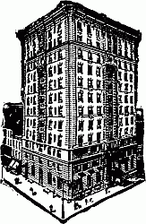

| Frontispiece: Theodor Herzl | Etching by Hermann Struck |
| The Menorah | Theodor Herzl |
| The Present Crisis in American Jewry | Israel Friedlaender |
| Our Spiritual Inheritance | Irving Lehman |
| Adam Prometheus, and Other Lyrics | Louis K. Anspacher |
| Sholom Asch: The Jewish Maupassant | Percy B. Shostac |
| A Menorah Prize Essay | |
| Liberalism and the Jews | Joseph Jacobs |
| What Is Judaism? | Mordecai M. Kaplan |
| University Menorah Addresses | |
| Activities of Menorah Societies |
| Chancellor HENRY HURWITZ 600 Madison Ave., New York | President I. LEO SHARFMAN University of Michigan |
| First Vice-President ISADORE LEVIN Harvard University | Second Vice-President MILTON D. SAPIRO University of California | Third Vice-President ABRAHAM J. FELDMAN University of Cincinnati |
| Treasurer N. MORAIS LYON University of California | Secretary CHARLES K. FEINBERG New York University |
| Boston University: Maurice Horblit | University of Colorado: Morris Baskin |
| Brown University: Ismar Baruch | University of Denver: Jacob Butcher |
| Clark University: Max Smelensky | University of Illinois: Sidney Casner |
| College of the City of New York: G. J. Horowitz | University of Maine: Lewis H. Kriger |
| Columbia University: M. D. Hoffman | University of Michigan: Jacob Levin |
| Cornell University: Leon J. Rosenthal | University of Minnesota: Moses Barron |
| Harvard University: Ralph A. Newman | University of Missouri: J. L. Ellman |
| Hunter College: Sarah R. Friedman | University of North Carolina: Albert Oettinger |
| Johns Hopkins University: Millard Eiseman | University of Omaha: Jacques Rieur |
| New York University: Charles K. Feinberg | University of Pennsylvania: Jacob Rubinoff |
| Ohio State University: Samuel Lesser | University of Pittsburgh: A. Jerome Levy |
| Penn State College: J. K. Miller | University of Texas: H. J. Ettlinger |
| Radcliffe College: Anna Rogovin | University of Washington: Roy Rosenthal |
| Rutgers College: Louis B. Gittleman | University of Wisconsin: H. M. Kallen |
| Tufts College: Philip Marzynski | Valparaiso University: Florence Turner |
| University of California: Louis I. Newman | Western Reserve University: Benjamin Roth |
| University of Chicago: David Levy | Yale University: Reuben Horchow |
| University of Cincinnati: Abraham J. Feldman | and the officers |
| Editor-in-Chief Henry Hurwitz | Associate Editor I. Leo Sharfman | Managing Editor H. Askowith | Business Manager B. S. Pouzzner |
| Dr. Cyrus Adler | Dr. Kaufmann Kohler | Dr. Solomon Schechter |
| Louis D. Brandeis | Justice Irving Lehman | Hon. Oscar S. Straus |
| Dr. Lee K. Frankel | Judge Julian W. Mack | Samuel Strauss |
| Prof. Felix Frankfurter | Dr. J. L. Magnes | Judge Mayer Sulzberger |
| Prof. Israel Friedlaender | Prof. Max L. Margolis | Miss Henrietta Szold |
| Prof. Richard Gottheil | Dr. H. Pereira Mendes | Felix M. Warburg |
| Dr. Max Heller | Dr. Martin A. Meyer | Dr. Stephen S. Wise |
| Dr. Joseph Jacobs | Dr. David Philipson |
| page | ||
| Frontispiece: THEODOR HERZL | From an Etching by Hermann Struck | |
| THE MENORAH | Theodor Herzl | 261 |
| Translation by Bessie London Pouzzner | ||
| THE PRESENT CRISIS IN AMERICAN JEWRY | Israel Friedlaender | 265 |
| OUR SPIRITUAL INHERITANCE | Irving Lehman | 277 |
| ADAM PROMETHEUS, and OTHER LYRICS | Louis K. Anspacher | 282 |
| SHOLOM ASCH: THE JEWISH MAUPASSANT | Percy B. Shostac | 285 |
| A Menorah Prize Essay | ||
| LIBERALISM AND THE JEWS | Joseph Jacobs | 298 |
| WHAT IS JUDAISM? Second Paper | Mordecai M. Kaplan | 309 |
| UNIVERSITY MENORAH ADDRESSES | 319 | |
| INTERCOLLEGIATE MENORAH NOTES | 322 | |
| ACTIVITIES OF MENORAH SOCIETIES | 325 | |
| INDEX to Volume I of The Menorah Journal | 333 | |
KOHUT SCHOOL | FOR BOYS |
| A L L D A Y IN THE C O U N T R Y | Unexcelled Advantages of Refined home Physical training, and outdoor sports under rigid supervision Resident Masters and House-mother Individualized attention in the class-room Gardening, Manual Training Bible Study and Elementary Hebrew For Booklet, Address at School HARRY J. KUGEL, Principal |
A popular account of the Polish and Russian Jews whose Pale of Settlement is the battleground of Teuton and Slav. It elucidates the problem of Russian Jewry which, at the termination of the world struggle, will claim alike the attention of statesman and humanitarian. It interprets the complex psychology of the Russian Jew who is becoming an important factor in the life of America.
Well we have just such a book, all ready for you—Paul Goodman's little "History of the Jews"—in the Temple Classics (the little books, you remember, that made Shakespere famous)—beautifully bound, a joy to handle, and a greater joy to read. Just write your name and address on this ad, tear it out, and mail to The Menorah Journal, 52 Vanderbilt Avenue, New York (with 40 cents in stamps for each copy you want—you can have as many as you like—they make dandy little gifts,—we'll send the other copies direct, if you like, to the addresses you give us).
| Kipling | Shakespeare | Scott |
| Dumas | Stevenson | Dickens |
| Poe | Lincoln |
| _ _ _ _ _ _ Dickens | _ _ _ _ _ _Dumas | _ _ _ _ _ _Stevenson |
| _ _ _ _ _ _Hugo | _ _ _ _ _ _Kipling | _ _ _ _ _ _Shakespeare |
| _ _ _ _ _ _Scott | _ _ _ _ _ _Poe | _ _ _ _ _ _Lincoln |
—An opportunity to make money—make it easily and pleasantly—and render yourself, your friends, and The Menorah Journal a beneficent service.
If you have already tried your hand at subscription-getting for The Menorah Journal, you know how agreeable it is to meet men and women of the class we desire for subscribers, and how quickly their interest is awakened when you hand them a copy and they see for themselves the distinction, beauty, and editorial "meat" of The Journal.
The special gift of the Portrait of Theodor Herzl from the Struck etching, which we are now offering with all new and renewal subscriptions received before January 15, 1916 (see announcement on page iii of this issue), gives you an extra advantage just now in urging your prospect to subscribe immediately. Work this for all you are worth between now and January 15th, and you will add a substantial sum to your financial resources. You need the money—and we need the subscriptions. The indubitable fact that lots of men and women in your neighborhood really need The Menorah Journal makes the prospects for both of us exceedingly bright.
Cash in! The chance is yours for the asking and the taking.
The time is short. Every day you let go by means money lost. Write to The Menorah Journal, 52 Vanderbilt Avenue, New York, for sample copies, terms, etc.—but meanwhile read the announcement (in the front pages) of the good things The Journal will have in 1916,—and begin seeing your friends at once.
| The World's Great Wonder Book—
It gives accurate, concise, and the most recent information on every Word, Name, Place, Person, and Thing; on every Phrase, Term, and Expression in the living English language—on everything alive that can be spelled in English. Lavish Expenditure to Make It Superior—
It cost nearly $1,500,000 to complete; for nearly four years 380 of the world's foremost editors and specialists labored upon it unceasingly. A Reference Work Beyond Comparison—
There are over 3,000 pages; 7,000 pictorial illustrations, including many beautiful colored plates; it defines 450,000 terms, many thousands more than any other dictionary. It is the only dictionary the contents of which are arranged in one alphabetical order—an immense time-saver. Most Authoritative Dictionary—
Six months after publication 75,000 copies had been sold; it is the dependable authority in all branches of the United States Government, in Courts of Law, in the leading Universities and Colleges, and in the Public Schools. In commercial life the NEW Standard is popularly recognized as the one dictionary that never fails. |
|
Send me free, by mail, Standard Dictionary Booklet and prices.
$2.50 per day A pleasant room with private bath, facing large, open court. (Not one room, but one hundred of them.) Also Attractive Rooms, Without Bath, $1.50 Per Day. The restaurant prices are most moderate. 600 ROOMS
| $3.00 per day An excellent room with private bath, facing street, Southern exposure. (Not one room, but eighty-seven of them.) The most central location in NEW YORK, equally convenient for amusements, shopping or business. 400 BATHS
|
WEBSTER'S
|
Member of American Museum of Natural History
B. B. Amrom
Collector and Expert Repairer of
Antiques
Chippendale, Sheraton, Heppelwhite, Adams,
Jacobean Furniture, Works of Art and Decorations, Sheffield Plate, Bric-a-Brac Pewter Historical Plates, Door Knockers and Curiosities Jewish Domestic and Ceremonial Objects INTERIOR DECORATOR AND UPHOLSTERER FINE CABINET WORK 728 Lexington Ave. New York Telephone—Plaza 854 |
Hotel Cumberland | New York |
|  | S. W. Corner Broadway at 54th Street "Broadway" Cars from Grand Central Depot Kept by a College Man Headquarters for College Men Ten minutes' walk to forty theatres. Rooms, with bath, $2.50 and up. New, modern and fireproof. Special Rates for College Teams and Students H A R R Y P. S T I M S O N, M a n a g e r The Cumberland does more college business than any other New York Hotel |
"THE MENORAH MOVEMENT"A book of 180 pages (paper bound)
giving a full account of the origin and
development of the Menorah movement
which has now extended to 35 colleges
and universities throughout the country.
The book contains also addresses by
many university heads and leaders in
American Jewry. Only a limited number of copies remain from an edition of 5,000. While they last copies may be procured on request by those who send in their subscriptions to The Menorah Journal directly to the office of the Journal, 600 Madison Avenue, New York. |
HOTEL
|
Volume—TONE—feeling—the most delicate shading of a theme are perfectly preserved and supremely present in every Columbia Record—an exquisite tone-perfection that does not vanish with use.
You can test these exclusive qualities in a series of home recitals such as no concert audience is ever privileged to hear. Arrange your first recital to-day.
The MenorahBy Theodor HerzlTranslated from the German by Bessie London Pouzzner
DEEP in his soul he began to feel the need of being a Jew.
His circumstances were not unsatisfactory; he enjoyed
an ample income and a profession that permitted him to
do whatever his heart desired. For he was an artist. His Jewish
origin and the faith of his fathers had long since ceased to
trouble him, when suddenly the old hatred came to the surface
again in a new mob-cry. With many others he believed that this
flood would shortly subside. But there was no change for the
better; in fact, things went from bad to worse; and every blow,
even though not aimed directly at him, struck him with fresh
pain, till little by little his soul became one bleeding wound.
These sorrows, buried deep in his heart and silenced there, evoked
thoughts of their origin and of his Judaism, and now he did something
he could not perhaps have done in the old days because he
was then so alien to it—he began to love this Judaism with an
intense fervor. Although in his own eyes he could not, at first,
clearly justify this new yearning, it became so powerful at length
that it crystallized from vague emotions into a definite idea which
he must needs express. It was the conviction that there was only
one solution for this Judennot—the return to Judaism.
When this came to the knowledge of his closest friends, similarly situated though they were, they shook their heads[262] gravely and even feared for his reason. For how could that be a remedy which merely sharpened and intensified the evil? It seemed to him, on the other hand, that their moral distress was so acute because the Jew of to-day had lost the poise which was his father's very being. They ridiculed him for this when his back was turned—many even laughed openly in his face; yet he did not allow himself to be misled by the banalities of these people whose acuteness of judgment had never before inspired his respect, and he bore their witticisms and their sneers with equal indifference. And since, in all other respects, he acted like a man in his senses, they suffered him gradually to indulge in his infatuation, which a number of them soon began to call by a harsher term than idée fixe. He continued, however, with characteristic persistence to develop one idea after another from his fundamental conviction. At this time he was profoundly moved by several instances of apostasy, though his pride would not permit him to betray it. As a man and as an artist of the modern school, he had, of course, acquired many non-Jewish habits and his study of the cultures of successive civilizations had left an indelible impress upon him. How was this to be reconciled with his return to Judaism? Often doubts assailed him as to the soundness of his guiding thought, his "idée maîtresse," as a French thinker calls it. Perhaps this generation, having grown up under the influence of alien cultures, was no longer capable of that return which he had perceived to be their redemption. But the new generation would be capable of it, if it were only given the right direction early enough. He resolved, therefore, that his own children, at least, should be shown the proper path. They should be trained as Jews in their own home. | ||
|
Hitherto he had permitted to pass by unobserved the holiday which the wonderful apparition of the Maccabees had illumined for thousands of years with the glow of miniature lights. Now, however, he made this holiday an opportunity to prepare[263] something beautiful which should be forever commemorated in the minds of his children. In their young souls should be implanted early a steadfast devotion to their ancient people. He bought a Menorah, and when he held this nine-branched candlestick in his hands for the first time, a strange mood came over him. In his father's house also, the lights had once burned in his youth, now far away, and the recollection gave him a sad and tender feeling for home. The tradition was neither cold nor dead,—thus it had passed through the ages, one light kindling another. Moreover, the ancient form of the Menorah had excited his interest. When was the primitive structure of this candlestick fashioned? Clearly the design was suggested by the tree—in the centre the sturdy trunk, on right and left four branches, one below the other, in one plane, and all of equal height. A later symbolism brought with it the short ninth branch, which projects in front and functions as a servant. What mystery had the generations which followed one another read into this form of art, at once so simple and natural? And our artist wondered to himself if it were not possible to animate again the withered form of the Menorah, to water its roots, as one would a tree. The mere sound of the name, which he now pronounced every evening to his children, gave him great pleasure. There was a lovable ring to the word when it came from the lips of little children. On the first night the candle was lit and the origin of the holiday explained. The wonderful incident of the lights that strangely remained burning so long, the story of the return from the Babylonian exile, the second Temple, the Maccabees—our friend told his children all he knew. It was not very much, to be sure, but it served. When the second candle was lit, they repeated what he had told them, and though it had all been learned from him, it seemed to him quite new and beautiful. In the days that followed he waited keenly for the evenings, which became ever brighter. Candle after candle stood in the Menorah, and the father mused on the little candles with his children,[264] till at length his reflections became too deep to be uttered before them. When he had resolved to return to his people and to make open acknowledgment of his return, he had only thought he would be doing the honorable and rational thing. But he had never dreamed that he would find in it a gratification of his yearning for the beautiful. Yet nothing less was his good fortune. The Menorah with its many lights became a thing of beauty to inspire lofty thought. So, with his practised hand, he drew a plan for a Menorah to present to his children the following year. He made free use of the motif of the eight branching arms projecting right and left in one plane from the central stem. He did not hold himself bound by the rigid traditional form, but created directly from nature, unconcerned by other symbolisms also seeking expression. He was on the search for living beauty. Yet, though he gave the withered branch new life, he conformed to the law, to the gentle dignity, of its being. It was a tree with slender branches; its ends were moulded into flower calyxes which would hold the lights. The week passed with this absorbing labor. Then came the eighth day, when the whole row burns, even the faithful ninth, the servant, which on other nights is used only for the lighting of the others. A great splendor streamed from the Menorah. The children's eyes glistened. But for our friend all this was the symbol of the enkindling of a nation. When there is but one light all is still dark, and the solitary light looks melancholy. Soon it finds one companion, then another, and another. The darkness must retreat. The light comes first to the young and the poor,—then others join them who love Justice, Truth, Liberty, Progress, Humanity, and Beauty. When all the candles burn, then we must all stand and rejoice over the achievement. And no office can be more blessed than that of a Servant of the Light. | ||
The situation is one that demands careful thought and delicate action. Only a few of us are in a position to influence the course of events by acting, but many of us may help to clarify the situation by thinking. A correct diagnosis is an indispensable preliminary to a cure, and it is only by finding out whether the issues underlying the present struggle represent a chronic and perhaps irremediable conflict, or are rather the effect of an acute and therefore curable misunderstanding, that a proper solution may be discovered and proposed. It is from this point of view that an attempt is here made to[266] analyze the present situation in American Jewry, to trace the causes which have produced it, and to point out the consequences which are unavoidable unless a remedy be applied in time.
Without any desire to lose myself in philosophic subtleties, I shall, for the sake of brevity, adopt the Hegelian language and explain the development of these issues on the principle of Thesis, Antithesis and Synthesis, i. e., of the initial prevalence of one extreme, of its yielding subsequently to the opposite extreme, and of the final harmonization of the two in a higher unity, combining the essential features of both. I shall endeavor to point out that the Synthesis forms the ground on which both parties may cooperate, without sacrificing an iota of their respective convictions.
The first issue, expressed in the formula "Diaspora versus Palestine," hinges on the question as to whether the Jewish people finds its best opportunities for development in the Diaspora, i. e., as an integral part of the nations in whose midst it lives, or, away from the other nations, as a separate entity, on its own soil in Palestine.
As time progressed, however, the "Diaspora" thesis gradually lost its force. Emancipation failed to fulfill the ardent hopes attached to it. The nations refused to allow the Jews to participate fully and unrestrictedly in the general life of the country. Anti-Semitism, manifesting itself in the crude form of hatred, or under the subtle guise of prejudice, turned, in many cases, the liberties previously granted to the Jews into a scrap of paper. On the other hand, the dangers of this extreme Diaspora Judaism, at first little thought of, began to loom larger and larger. The rush for emancipation threatened not only to disrupt the unity of the Jewish people throughout the world, which had been maintained during the ages of suffering and persecution, but it also led large and important sections of Jewry to assimilation, that is, to complete absorption.
It was not long before the antithesis, too, began to reveal its deficiencies. The difficulties of reaching the Zionist goal very soon proved far greater than had been anticipated in the blissful ecstasy of the Zionist honeymoon. The ultimate consummation of the national hope receded further and further before the longing gaze of the Jewish people, and no longer held out an immediate remedy for the pressing needs of suffering Jewry. The conviction also gradually gained ground that, even under the most favorable of circumstances, Palestine could only harbor a fraction of the Jewish, people, and that the vast bulk of Jews would still remain in the lands of the Diaspora. Zionists who were looking reality in the face could not accept the view of the extremists, who were ready to save a small portion of the Jewish people at the cost of abandoning to its fate the enormous majority thereof.
Hence the Jewish task became a double one: the Jews in every country, while participating to the full in the life of their environment—for the return to the Ghetto was neither desirable nor possible—had to endeavor to secure a maximum of elbowroom for the development of their own section of Jewry, while as part of universal Israel they had to keep up their contact with the Jews throughout the world and labor with them for the realization of the common Jewish hope, that of a spiritual center in the historic land of Judaism. Diaspora without Palestine was impossible, because without the refreshing breath of a healthy Jewish life in Palestine it was bound to wither and dry up. Palestine without the Diaspora was equally impossible, because it lacked the backing of the people as a whole, and was in danger of becoming a petty and obscure corner in the vast expanse of the Jewish Dispersion, a sort of Jewish Nigeria.
This synthesis was not a pale cast of thought, the flimsy product of an imaginative brain. It had its prototype in the actual facts of history. For during several centuries preceding the dissolution of the Jewish state, Palestine was the spiritual center of Judaism, in the sense just indicated. The Jews outside of Palestine were superior, not only in numbers, but also in wealth and influence, to those of Palestine. The Jews of Egypt, and the same applies to other countries of that period, were closely associated with the cultural and material aspirations of their environment. Philo was one of the most illustrious representatives of the Hellenic culture of his age; these Diaspora Jews even found it necessary to translate the Holy Writings into Greek. Yet they were, at the same time, loyal to Palestine. They paid their Shekel, they made their annual pilgrimages to Jerusalem, and looked upon the Holy Land as the spiritual center of all Jewry.
The departure of the Jews from the Ghetto and their entrance into modern life marked a turning point also in this direction. Filled with the desire of becoming part of the nations in whose midst they lived, modern Jews were ready, and thought they were compelled, to deny the national character of Judaism. The Jews were now labelled as Germans or Frenchmen of the Mosaic persuasion, who were divided from their fellow-citizens by the purely spiritual affiliations of religious faith—the same affiliations which divided the Christian population. Here, too, Reform Judaism was quick to meet the demands of practical life. It began to chop off all the elements in Judaism which betrayed a national character, both in the domain of doctrine and of practice, though it halted half way, and down to this day still acknowledges, in flagrant contradiction with its own theory, a number of rites and ceremonies which bear an unmistakable racial imprint.
This transformation of Judaism, or rather this transformation of Jewish terminology—for, in many cases, it was merely a question of terms—was greatly stimulated by the development of nationalism in Western Europe, where the structure of the modern state excluded, or was thought to exclude, a diversity of nationalities, while the principle of religious toleration left enough room for a variety of religious beliefs. As a result, those Jews who lost their religious affiliations were bound to feel that they were outcasts in the religious community of Israel: they became either konfessionslos or, by a curious perversion of logic and conscience, became members of the dominant faith.
Here, too, however, the synthesis was gradually paving its way, and the formula "Religion plus Nationalism" was supplanting the thesis "Judaism as Religion" and the antithesis "Judaism as Nationalism." The religionists, that is, the believers in the purely religious character of Judaism, began to realize the devastating effect of their doctrine on Jewish life and development, while the nationalists, without sacrificing their convictions—for religion, least of all sentiments, can be forced on modern men—began to appreciate the overwhelming influence of the Jewish religion as a historic factor in the life of the Jewish people, and were ready to acknowledge the difficulty and the danger of squeezing an officially nationalistic Jewry into the narrow frame of the modern Nationalstaat.
This mutual rapprochement resulted, gradually, in a tacit agreement—an agreement far more durable than a legal compact, because founded on sentiment rather than on law—which implied the recognition of Judaism as composed of Religion and Nationalism, but left sufficient room to include the two extreme types of Jews: those whose loyalty to Judaism was entirely fed from the fountain of religion, and those whose devotion to Judaism was altogether grounded in race consciousness.
These issues were of particular and immediate significance for the Jews in this country; for America has, in less than one generation, become the second largest center of the Jewish Diaspora, and bids fair to become the first, instead of the second, within another generation. No other country in the world offers, even approximately, such a favorable combination of opportunities for the development of a Diaspora Judaism, as does America: economic possibilities, vast and sparsely populated territories, freedom of action, liberty of conscience, equality of citizenship, appreciation of the fundamentals of Judaism, variety of population, excluding a rigidly nationalistic state policy, and other similar factors. It is no wonder, therefore, that in no other country did Reform Judaism, as the incarnation of Diaspora Judaism, attain such luxurious growth as it did in America. It discarded, more radically than in Europe, the national elements still clinging to Judaism, and it solemnly proclaimed that Judaism was wholly and exclusively a religious faith, and that America was the Zion and Washington the Jerusalem of American Israel.
This conflict of ideas became extraordinarily aggravated by numerous influences of a personal character. The division between the so-called German Jews and the so-called Russian Jews was not limited to a difference in theory. It was equally nourished by far-reaching differences in economic and social position and in the entire range of mental development. The German Jews were the natives; the Russian Jews were the newcomers. The German Jews were the rich; the Russian Jews were the poor. The German Jews were the dispensers of charity; the Russian Jews were the receivers[272] of it. The German Jews were the employers; the Russian Jews were the employees. The German Jews were deliberate, reserved, practical, sticklers for formalities, with a marked ability for organization; the Russian Jews were quick-tempered, emotional, theorizing, haters of formalities, with a decided bent toward individualism. An enormous amount of explosives had been accumulating between the two sections, which if lit by a spark might have disrupted the edifice of American Israel, still in the process of construction.
This cooperation found tangible expression in the recent participation of American Jews in the upbuilding of Palestine, a participation which one will vainly look for in a similar group (I am not speaking of isolated individuals) in other countries. The same desire for a better understanding was further embodied in the movement toward Kehillah organization, which, though centering around the Jewish religion, still clearly implied the national element in Judaism.
There was every reason to hope that this cooperation, which had been so happily inaugurated between the two sections, would become more intimate and more extensive, and that the interaction of the heterogeneous[273] elements of American Jewish life would resolve itself in a great and strong harmony. America bade fair to become an ideal Jewish center, where the practical wisdom of emancipated Jewry and the idealistic intensity of Ghetto Jewry would be merged in one united Jewish community, fully conscious of its duty as the future leader of the Jewish Diaspora and acknowledging its indebtedness to the center of all Jews in the land of our Fathers.
In this mood of distrust and prejudice, American Jewry was overtaken by the great crisis resulting from the World War, and the disharmony prevailing between the two factions soon found tangible expression in the struggle over a Jewish Congress. The two elements of American Jewry were clearly divided on the issue: the German or native Jews, represented by leading members of the American Jewish Committee, were opposed to the calling of a congress, while the Russian or immigrant Jews, speaking largely through the Zionist organization, clamored for it.
From what has preceded I believe it may be safely concluded that this demand for a congress on the one hand, and the opposition to it on the other, are not rooted in diametrically opposed and deeply implanted theories of Judaism but are rather the expression of different moods or temperaments. The immigrant Jews who were directly concerned in the war, since its horrors affected their homelands and the kin they left behind, and who were impulsive and sentimental, felt the burning need of crying out in their despair, and were ready to face the consequences which might result from this outcry. The native Jews, whose sympathy with their far-off brethren, profound though it was, could hardly, in the nature of the case, be more than indirect and whose accustomed reserve and self-restraint enabled[274] them to judge the issues more calmly, shrunk from the risks which in their opinion were implied in an open protest of the Jewish people before the inflamed public opinion of the non-Jewish world. It is not my intention, nor is it my function, to render judgment in so momentous an hour on an issue concerning which Jewish opinion is diametrically yet honestly divided. But it is necessary to point out that whichever side may be in the right: serious as may be the dangers of holding a congress or not, the dangers involved in a split over this question are incalculably more serious. Such a split may not only result in permanent and perhaps irreparable injury to the Jewish cause in America and to the Zionist movement in this country, but may also, by aligning the two sections of American Jewry against one another, spell nothing short of disaster to the Jewish people as a whole. The stakes involved in this conflict are infinitely greater than the issue which has given rise to it.
As for the Zionist movement, one cannot help doubting whether Zionism, even if it succeeded in defeating its opponents, would thereby obtain its object. I am not speaking of the very considerable material injury which the movement will suffer from the indifference and hostility of the other side. I am rather thinking of the dangers incurred by Zionism itself if, having[275] repulsed the so-called classes, it becomes a one-sided movement of the masses. Of course, no Zionist can be otherwise than deeply gratified by the prospect of Zionism becoming a cause of the people, but unless it manages to preserve the balance of power within the Jewish community, it will be exposed to risks from another source. Zionism is beset with so many difficulties that it dare not burden itself with problems extraneous to it. The injection of political or economic issues into the movement is fraught with incalculable consequences for the future of the movement in this country. These issues are so extensive in their bearings and so vital in their manifestations that if superimposed on the delicate structure of Zionism they may crush it, never to rise again.
Zionism must, therefore, remain neutral. While including all Jews, it dare not identify itself with any section of them. It dare not be either a movement of the classes or of the masses. While holding scrupulously aloof from the issues which divide modern Jewry as part of modern humanity, it must keep its eye fixed on one point, the securing of a Jewish center for the Jewish people as a whole, in which the ills that afflict humanity may be cured in the prophetic spirit of justice and righteousness.
Nor is the Jewry of America at liberty to choose. There is an ancient Jewish legend which, with a subtle touch of sarcasm, tells us that when the Lord, having descended upon Mount Sinai, was about to bestow the Torah upon the Jews, the latter, shrinking from the obligations imposed by it, made an attempt to refuse the proffered gift. Thereupon the Lord lifted the mountain over their heads and angrily exclaimed: "If ye accept my Law, well and good. If not, ye shall be crushed on the spot!" And the Jews, yielding no less to the promptings of duty than to the dictates of wisdom, quickly recanted and declared: "We will do and obey!" American Jewry will either be the leader of Jewry or it will not be. Let it fail to respond to the great call of history,—and it will unfailingly relapse into the obscurity and sluggishness of its former parochialism. This great world crisis will be either the making or the unmaking of American Jewry, and no Jew whose mind is unclouded by the ephemeral passions of party strife can do aught except ardently pray that the Jews of America may emerge in triumph from their supreme test.
To the old-time Jew a conference of rabbis meant a conference of men learned in the law and its authoritative interpretation in the Talmud—men whose duty it was to teach this law and who would confer among themselves upon the application of its abstruse and technical rules to the daily needs of their congregations. But they could recognize no questions and no problems not fully covered by that law; consequently they could recognize no right in any person not an authority on that law to take any part in such a conference except to ask for the advice of the rabbis appointed to teach the law. That was the attitude of our ancient leaders, and it met with the full and unqualified approval of the Jewish laymen, because it fulfilled all the requirements of our medieval condition. Until recent times we were a people apart, living among the nations of the world, but not a part of them. We had no right to join in the general civic life. Our life consisted in the memory of a national past and in the dreams of a national future. So far as the present was concerned, we were perforce interested only in the maintenance of our identity and in the preservation of our ancient law, so that we might be in a position some day to realize our dreams and to reëstablish our national state, founded on this ancient law. Deprived as we were of all right to live in the present, we could justify our existence and continuance as a[278] separate people and a separate religion only by laying stress on the importance of our ancient law, and striving to hand it down, pure and unaltered, to future generations. Therefore in those days the rabbis were naturally our only leaders, and their right to leadership depended solely upon their knowledge of the law. The observance of the Torah embraced all the limits of the life of the Jew.
Inconceivable as it would be to a medieval Jew that at a conference of Jewish rabbis a layman should preside and laymen should make formal addresses, it would be equally inconceivable to such a Jew that among the laymen who might make such addresses, there could be a professor at a great university, a worker in the general social activities of the city, and a judge. These changed conditions, this wide life now opened to the Jews, have produced new problems, and we demand of our rabbis, if they are indeed to remain the teachers and leaders in Israel, that they help us solve these problems.
As soon as opportunities were offered to us, we eagerly grasped them. We are too eager, too ambitious, too practical a people to continue to live in dreams of the past and visions of the future, when the present is thrown open to us. We have definitely and forever discarded the concept that we are a peculiar people, the "chosen of the Lord," in so far as that concept cuts us off from free participation in the life of the nations among which we live, or from serving in the cause of the general advance of humanity. We have demanded the opportunity to exercise civic rights, and as those rights have been granted, we have recognized that the opportunity confers also an obligation—the obligation to exercise those rights in no narrow spirit, but for the benefit of the whole people of which we are now a part.
We have discarded, as I have said and as I firmly believe, the ancient[279] concept that Judaism means membership in a peculiar people, the chosen of the Lord, except possibly in the sense that we have a peculiar obligation imposed upon us to demonstrate to the world the power and worth of a spiritual ideal. We Reform Jews have discarded the view that in any literal sense the Lord revealed himself unto Moses and gave unto him the tablets of stone. The words "Hear, O Israel, the Eternal is One, the Lord is One," are still dear to us, but many who call themselves Jews deny even the existence of a personal God. Why then do we still remain Jews, why do not those so-called Jews, who deny the existence of the Lord, frankly join the ranks of so-called universal philosophers while the rest of us join the Unitarians?
The answer comes not only from our heads, but from our hearts. Most of us could not renounce Judaism because deep down in our consciousness, aside from reason or logic, we know we are not as other men; we know we are Jews. We hear the cry of the suffering in Belgium and we answer to that cry because we are men and nothing human is alien to us,—but when we hear the cry of the suffering Jew in Poland and Palestine, then the true Jew answers that cry as the cry not only of a fellow human being, but as the cry of a brother.
During all the centuries since the dispersal, the Jews have had a common history, a common tradition, a common spiritual ideal, and they have survived by reason of the force of this common inheritance. It is this common inheritance of a past founded on a spiritual force that to-day, in my opinion, constitutes Judaism.[280]
That tradition at least is our own heritage, and he only is a Jew who recognizes the force of spiritual ideals, and by virtue of that inheritance also for himself assumes the obligation involved in being a member of a nation of priests and a holy people.
If that spiritual concept and not merely race constitutes the basis and the essential content of Judaism, then surely the question of whether the maintenance of Judaism will be a benefit to the country in which we live answers itself. In all civic matters we must work and be as one with our fellow-citizens, but America demands that each citizen give to its service the best of which he is capable.
Since Judaism means the recognition of a peculiar obligation imposed upon us by our past; since Judaism is founded upon a spiritual ideal,—adherence to our ancient faith and endeavor to live up to our past must be to us a source of greater moral and spiritual strength—strength that we must bring to the service of our country.
This is neither the time nor the place to discuss such a matter. For myself, I wish to say that if in the country where through our fathers the world first learnt the value of spiritual ideals, where it was prophesied that[281] "the law shall go forth from Zion and the word of the Lord from Jerusalem—" and "nations shall no longer lift up sword against nations neither shall they learn war any more," a community of Jews shall be again established who shall represent and contribute to the fulfillment of the prophecy, such a community would be from a spiritual standpoint a living force to keep Judaism alive throughout the world.
And it is the duty of our rabbis in the present just as it was in the past to lead us and strengthen us in our Judaism. A conference of rabbis to-day properly recognizes that Judaism consists no longer in the minute observances of the law; that the Jewish people are asking for the inner meaning of their religion, and not for dry formulas. In all humility as a layman, I say to them that the Jewish people again needs to be taught that what the Lord requires of them is "to do justice, to love mercy and to walk humbly with their God."
The American spirit and the Jewish spirit are in entire accord, in fact they supplement one another. The Puritan ideals of democracy which lie at the foundation of our Government were derived principally from the Jewish ideals of democracy, and I cannot imagine any American being less an American for being a good Jew. On the contrary, he will be a better American for being a good Jew, more ready at all times to make every sacrifice for his country in peace and in war.—Hon. Oscar S. Straus, in a Letter to The Menorah Journal.
[A] This address was delivered at the opening session of the Eastern Conference of Reform Rabbis, Temple Emanu-El, November 7, 1915, at which Justice Lehman presided.
Adam Prometheus |
I |
| In olden books 'tis written, |
| That he that would discern |
| The secret'st truth of things |
| Lost paradise eterne. |
| He was the first that fed |
| On fruit that knowledge brings; |
| Exiled from joys, he fled |
| And flaming swords did burn |
| Behind his path, which led |
| To miseries. |
II |
| Great God, vouchsafe me truth: |
| For I am one that smitten |
| With the deep mystery of things, |
| In learned lore uncouth, |
| Out of pure wonder sings |
| In harmonies. |
III |
| Great God, forfend the tooth |
| Of deep remorse, and stings |
| Of joys that I did spurn: |
| Oh, spare the gnawing ruth |
| Of memories' torturings, |
| Yea proudly did I turn |
| From earth to snatch at wings |
| To soar and ne'er return |
| To life's lees. |
| [283] |
IV |
| Great God, I too am cursed; |
| A destiny from birth, |
| Of all dread fates the worst, |
| Drives me unrestful, flings |
| Me from my Eden bliss, |
| Over a barren earth, |
| To impious search for things |
| Whose heart is an abyss. |
| I too am one that clings. |
| In lust for a knowledge kiss, |
| Upon my knees. |
V |
| Great God, I've given o'er |
| My paradise of ease, |
| Allowed my soul to soar |
| To mysteries high or deep |
| At the world's core; |
| Oh, quench its ardent thirst, |
| Its hunger, God, appease:— |
| Or if Thou dost ignore |
| The soul that Thou hast nursed, |
| Then smite me as I leap, |
| And let Thy rages roar |
| On me as in the first |
| That fell on sulphur seas. |
| Yea, down Hell's sliffy steep |
| Thy molten lightnings pour |
| Till darkness be immersed; |
| Yet know I will not creep |
| Though all Thy thunders burst |
| In penalties. |
My Psalm of Life |
| I cannot grow as men would have me grow, |
| By ordered plodding to a life complete; |
| Climbing the path with slow and heavy beat |
| Of tedious footsteps from the world below. |
| I cannot like a visible circle flow |
| [284]Until by measured compass I can meet |
| The place I started from with weary feet. |
| That proudly point the obvious path they go. |
| Ah no,—mine be the instinct given to trust |
| That all will in the outcome fall aright. |
| Like a migrant swan still wandering since I must, |
| I'll fill a life's full cycle in my flight: |
| Though I soar into the clouds or sink to dust, |
| My orb will come around; I'll reach my height. |
The Vocal Memnon to the Sphynx |
| The sands of time drift round me, and within |
| There is the knell of passing and decay: |
| The sun-smit vastness of the world doth weigh |
| Upon my riddling soul like hidden sin, |
| And bids it speak. Thou desert art my kin! |
| I crumble to thee, waning day by day; |
| But I am cursed with questions that betray |
| The end of life before death's hours begin, |
| My eyes are staring, yet their sight is blind. |
| My ears are hollow, yet they hear no sound. |
| My knees are buried and my body sinks. |
| The stars weave fates that they themselves unwind, |
| Traversing the same cycles round and round; |
| While I sit gazing at the silent Sphynx. |
Sholom Asch sat opposite me smoking his cigarette and sipping his coffee—a big man of thirty-five, with broad shoulders and a frame sturdy and substantial; thick black hair, a high forehead, a characteristically Jewish nose, a firm mouth, a little black moustache, and deep brown eyes—eyes that at times would seem to be unaware of anything surrounding them, yet one felt that they saw everything and understood everything. His complexion was that of a ruddy boy, yet his large handsome features had the sensitiveness which classed him unmistakably as an artist.
He was talking in Yiddish. His voice was soft and his sentences followed each other in musical cadence and beauty.
"Through the kindness of a friend we entered a house on one of the strange streets. Like most of the old houses its front was plain and unattractive. We went through a court and on to a balcony overlooking an enclosed garden. Such a garden I had never seen! It seemed a picture transported from the 'Thousand and One Nights.' In the center was a fountain of extraordinary workmanship, so inlaid with gems that after the water had gushed out it seemed to splash down again in a shower of ruby and amethyst. About the fountain were palms and fig trees. The flowers were more wondrous than the jewelled water or the many-colored mosaics of the walls and arches.
"On the grass sat a grey-bearded Mohammedan. He smoked his hookah in silence. Suddenly we heard voices. Three young women came from the house and bathed in the fountain. Their lord and husband sat stoically and smoked. They laughed and played in the splashing waters. And as I watched this old man and these beautiful women, I thought myself back in the ancient Damascus, in the city that I had thought was dead for a thousand years.
"The next day I visited a shop where hammered gold and silver, for which Damascus is famous, was sold. With the permission of the proprietor I went upstairs to the workroom. What I saw there I shall never forget.
"I found myself in a long but very narrow room, dimly lighted by a few dirty windows. In two long rows in front of two long tables sat fifty or sixty little girls huddled so close together that they touched one another. Each child was bent over the table and each held a little hammer. She was tapping on a piece of metal. The tapping was never-ending—a sharp clicking sound like the falling of hail. The children never spoke nor smiled. Near me sat a little girl. She was not more than eight years old. Her hammer had stopped tapping and her eyes were closed. She was asleep. The girl next to her, evidently her elder sister, seeing the foreman approach, pinched the child sharply. She opened her eyes and dully[287] began her tapping. As I left this room of darkness my eyes were wet with tears.
"I found out that only little girls were employed in this industry: that they began when eight or nine years old. When they were sixteen they usually were dead from the metal that had entered their lungs. The children were mostly Jewish, for you must know that when the Jews become part of a slow Eastern civilization they sink yet lower and become yet more phlegmatic and listless than the people among whom they have settled. I was indignant and asked if nothing was being done to remedy this terrible evil. Then I was told that there was one man who was devoting his life to freeing these children. It was the Jewish merchant who used the only electric light in Damascus. He gave every cent he earned to this work. He maintained an industrial school for Jewish children and was trying to interest the Jews of the world in the movement. And then I blessed this man's electric light. I think of him always as 'The Light of Damascus.'"
Sholom Asch was born and brought up in a little town in Poland, Kuttnow, near Lodz. His father was a merchant on a small scale. He bought sheep and oxen from the peasants and shipped them to be marketed in Lodz, in Germany, in France. He rode about the country and sometimes took Sholom with him, whom he loved especially because he studied so well. Sholom liked the sheep and the cattle, and he loved the melancholy Polish landscape—mystic, fearful.
His father was a healthy, normal, honorable Jew; not fanatical but deeply religious. He was philosophic toward life, he cared nothing for money and was content without it. His mother, on the other hand, was nervous and worldly. She was dependent on the externals of life and to her no money was misery. There was a big house with much food, many new clothes, much hospitality, and many big brothers and sisters; something like eleven children. The ceremonies of the Jewish faith were observed beautifully, the holidays kept happily. There was substance and spirit.
One day a peasant came to his house and Sholom went with him on his wagon. That was a wonderful day; he played hookey. The next day the rabbi, who believed in corporal punishment, expressed his views on the matter of absence.
Asch was extremely clever at learning the Talmud and the old history and philosophy of the Jews. He learned to reason from the Talmud and to-day he says, "Art is logic. There must be an 'Urkraft' (elemental strength) behind a man's work." And if there is one outstanding characteristic of Asch's work, it is this elemental, this passionately strong and elemental vein.
Max Reinhardt, whom Asch calls "Ein Dichter im Theater," loves Asch dearly. In his Deutsches Theater, the most artistic and best equipped theatre in the world, he produced Asch's God of Vengeance. This was a marked success and is still a most popular play in Germany, Russia, and in the Yiddish theatres of New York. Asch was only twenty-four years at this time. From this play he made much money and a whole village was made happy an entire summer.
Since then his income from his writings has increased steadily. Much of his work is now translated into Russian and German, but as yet not into English. The income from his translations far exceeds that from his Yiddish publications, and he is able to support his wife and four children in ease and comfort. Although he has been to America a few times during the last six years, it is only several months ago that his wife and children arrived from Poland and he settled here permanently.
And now since Perez's death, on Asch's shoulders has fallen the responsibility of being the greatest Jewish writer living to-day. He is assuming the added duty of revolutionist as well as artist. For the serious Jewish writer is a sort of rabbi to his people. Ethically he stands for the old Jewish ideals. To these Asch has added the beauty of paganism and the vision of anarchistic communism.
In Paris once he came to a meeting of Zionists. He spoke against the Zionist idea and was not listened to with great deference. Another writer, Abraham Raisin, coming in shouted, "Hear! Listen to a great Jew." Asch was given the floor and finished the speech.
Asch feels that only now is he beginning to drop his Jewish past as material for his work. He is going out into the future: he is becoming impressed with a vision of the America to be—the ideal democracy. And his work is showing it. He is planning a poetic industrial drama, he is finishing a gripping war play. His deep understanding of the industrial slavery of our times is shown wonderfully in his novel, Motke the Scamp, which is now appearing in serial form in the New York Yiddish Forward. He begins with Motke's infancy. His mother's milk is sold to the rich man's baby; Motke is cheated of everything. Picture after picture of sordid Polish ghetto life follows—intermixed with wood and river sunshine as only Asch can do it. One feels the sun resting eternally over all, while man with his laughter and tenderness and pain struggles toward perfection.
Asch has traveled through Russia talking on various subjects to Jewish gatherings, not for money but for love of his race. He has visited Palestine, but with a keen interest in the growth and development of the Jew—not from a nationalistic standpoint but from a world point of view.
And this is why he admires America—because it brings to him a vision of a perfect race, the result of the mixture of all races, perpetuating the[290] fine traits of all. He is immensely interested in the public school. He believes in democracy and thinks we have it in America.
For artists, however, he says this country is not good. The newspapers in Europe, he says, print what Tolstoi eats and how he sleeps. Here Rockefeller is the national hero. The artist here lacks artistic obstinacy; he succumbs to money, he leaves starvation and his Kunst.
He loves Gogol and Tolstoi. Faust is one of his favorite dramas. He loves the old masters Greco and Rembrandt; among the moderns, Cézanne, Puvis de Chavannes, Manet. In opera he does not care for Wagner, but he is very fond of The Magic Flute, of Madame Butterfly, of Pagliacci. He loves music and the theatre. Asch reads in many languages, German, French, Russian, Polish, Hebrew, and a little English. But to everybody he talks in Yiddish. He has no ear for other languages except English, which he says is like his mother tongue!
In the spring Asch goes out to the country and works, in the summer he loafs, in the winter he lives among his friends. He writes all the time, being chock full of energy—for work, for love, for friendship, for happiness. As he says, "I am thankful to God for three things: first that he gave me life, second that he gave me my talent, third for my love for you" (this to whomever the lady happens to be).
Like all the artists he is erratic, original, attractive, all-seeing. But unlike most he has much strength of character and a brilliant logical faculty that makes him check up his personal relations. He has much affection in him and a great honesty and integrity which wins him admiration and respect, and he has many friends among many kinds of people in many parts of the world.
Sholom Asch is a philosopher, a novelist, a poet, and a dramatist. He loves the clouds and the sea, he truly loves mankind. Always through all he writes one feels a deep and elemental strength, an elemental belief in nature and truth. He is not ahead of his time; he is rather an interpreter and inspirer of his own day. This makes him the happy person that he is. He is greatly honored in Russia and in Germany, and by all writers in Europe.[291]
At the beginning of the novel Mery has just returned from the gymnasium. She is oppressed and dissatisfied with her provincial surroundings and longs to go to the university at St. Petersburg. Mischa, in love with Mery, has also just completed work at the gymnasium, and they plan to go to St. Petersburg together. The artist Kowalski now comes to the little south Russian village and soon Mery is in love with him. Mischa is much distressed and suffers greatly. Kowalski leaves, promising to meet Mery at St. Petersburg.
The second part of the novel opens with Mischa and Mery in St. Petersburg. The climate does not agree with Mery and Mischa arranges that they go to a Finnish village. Here they grow very dear to each other and Mischa is about to propose when Kowalski melodramatically appears. Kowalski and Mery now give expression to their love. Mischa returns to St. Petersburg but cannot pursue his studies because the revolutionary[292] disturbances have closed the university. Kowalski and Mery return to St. Petersburg soon after and are admitted to the bohemian life there. Kowalski meanwhile has become famous. The lovers gradually grow apart and when the revolution breaks out Mery returns to her home for safety, leaving Kowalski never to see him again. Mischa has returned home also. After a massacre of the Jews in the Grube in which Rahel, the sister of David, is outraged, he sees that in marrying her lies his only means of becoming one of the Jews whom he was so desirous of helping. So despite the fact that he still loves Mery and she is now willing to be his wife, he marries Rahel. Mery after a period of restlessness in the little town returns to St. Petersburg to join the bohemian group there.
"The sun seldom shone into the valley. Old people lost their vision early and the percentage of child mortality was enormous. But even those who remained alive under these conditions were weak, sick, half crippled people; impoverished figures with crooked legs, large heads and weak arms crept through the streets.
"And in spite of everything the inhabitants never left their grave (Grube) and made no attempt to find a better, more healthy home. A sort of sick love bound them to their unfortunate homes, and like a curse it rested on each who was born in the valley—that he could not free himself from it and that until the end of his days he must eke out his sad existence there."
After the massacre Mischa walks through the Grube:
"The murmur of prayers re-echoed to his ears. From the little windows of the synagogue came the soft gleam of candles. He entered. Deep as in a cellar, as miserable and abandoned as themselves, lay the little house of prayer of the wretched inhabitants of the Grube. The walls were bare. The Ark of the Covenant was hung with only a piece of coarse linen. In front of the broken 'altar' stood an old man in a torn prayer shawl and prayed before the small penny candles. The room was full of worshippers, all inhabitants of the Grube. Their prayer was a groaning, and sighing, and screaming, out of tormented[293] hearts. It rose up to the low ceiling and hung over them all like a heavy black cloud."
And then Mischa knew his people:
"He felt his strength to bear everything; sorrow and misery and persecution. He saw his people doing the work of servants through the centuries, from the farthest past to the present day. He saw the bare walls of the synagogue, the wretched Ark of the Covenant, he heard the sad melody of their prayers which grew to despairing screams. . . . He had the feeling that he was with his people in a large ship. For eternities this ship was on a voyage of searching. It landed at harbors always new and strange: Egypt, Palestine, Babylon, Arabia, Spain, at Turkey, at Holland and Russia. And to-day is also a test day for the Jews. And also this day will end, and many, many, but the ship will always sail on, will carry them all to new harbors into the farthest future."
"St. Petersburg had become sickening to him. For loneliness he longed, for solitude. Solitude, with his brush behind the mountains, in the deep woods. To see every day sun, mountains, and water! The water that pushes blocks of ice before it, and to see the cloud shadows which camp on the wide snow fields. To live again in the little room with his comrade the Lithuanian peasant with whom he studied in the academy! To have no money. To eat bread; much good black bread with honey which his comrade's father would send from the village. For whole days to wander about and paint clouds!"
Mery discovers him at work, and looking at his painting he says:
"Everything is clouds—the warmth that I feel, the warmth— . . . and do you see the pride that such a cloud has, the pride, the formality? 'The cloud is no small thing,' my fat professor used to say. It is no small thing to paint a cloud, for then one must feel eternity. As lovingly as a girl's body must one model a cloud. And warmth and pride must come to expression. To paint a cloud means to step into Heaven, into the middle of Heaven and to see a new world which we do not know here at all. Such a nobody as I wishes to paint a cloud, a Heaven—wishes to have seen God and create Him anew with his little art! That is an impudence, isn't it?
"There you see what I have painted. It is nothing—it is worthless—something is lacking." He looked amusedly at the picture. "Love is lacking. So it is as my professor with the fat belly loved to say, 'To paint a real cloud one must love.' Yes, yes, to be able to create something good one must be in love or—do you know what? Or to feel a great sin in one's soul. Yes, yes, with a burning sin in one's heart one can create big things. When one has entirely fallen. . . ."
"Ein Eilbotte" is really a prose poem describing a sunrise, a storm, and the reappearing sun—more properly perhaps a series of paintings, of symphonic word canvases. Let me translate the opening passages:
"Behind the town ruin which stands on a small hill like a national monument, flaming and fiery rises the red of the morning and floods with its glow the gray clouds that hang in the horizon. It brings a son of the sun into the world. The day tears itself from the lap of the mother Night.
"In the little town life is beginning to stir. Here and there one sees a peasant wagon on which the dew drops of the night are still hanging. Here and there a Jew, eyes heavy with sleep. The show windows and house doors are for the most part locked. For many of the inhabitants the day has not yet begun. . . . This day shall be like yesterday, like to-morrow."
A storm rushes over the woods. The storm comes like a mighty giant that wishes to swallow the world or it seems as though God himself were spreading out His black mantle: "The end of the world! Neither heaven nor earth, neither beginning nor end! Black, ominous, dull, empty. . . . Suddenly Heaven opens for a second. . . . A blinding light has torn the clouds. Stabbed by a flaming dagger the giant dies—a confused moaning fills the air. It rains." But the storm passes. "The Heaven is clear and blue as if nothing had happened. The air is clearer and purer, the earth washed clean by the water."
"The 'crazy Trajna' stands life-like before him. Out there at the well she stands. . . . He sees her plainly. . . . All too well he knows that dirty sun-burned face plowed through by a thousand wrinkles, those great blood-shot eyes with the swollen, sore lids. . . .
"He remembers her, yes, he remembers. . . . He was still a little boy then, when the teacher carried him to school in his arms. He cried then and hung tightly with both hands to the apron of his mother.
"Mother! . . . this woman his mother?"
And so the emotions of the boy are set forth in memories telling us of his mother before she was insane and now, when she is known to all the[295] village as the "crazy Trajna." The time when he found her insane is described. It was raining and he was hurrying home from school. Suddenly he sees his mother near his father's house:
"There at the corner she stands. . . . Trembling for cold she seeks protection under any roof. . . . The boy stands as rooted to the ground, without turning his gaze from her. The water flows in streams from his coat. She has turned her glassy eyes on him. Slowly as though following some inner force she comes closer to him. He is not able to move from the spot; something unspeakable gleams in those glassy eyes. . . .
"Now he feels in her the mother. . . . His heart beats as though to break. Always closer to him she comes. A hot wave of blood flows through all his limbs and rises to his head. He trembles as in fever.
"Suddenly all fear leaves him. He assumes a waiting position and looks directly into her eyes.
"Now she stands close before him. She looks at him. Away! These eyes! this look! He wishes to fall weeping into her arms. . . . To weep, yes, to weep . . . to weep and to kiss.
"He is in the impulse to carry out his purpose when she suddenly takes his hand. With a quick push he tears himself from her embrace and runs away as rapidly as he can.
"It seems as though she ran after him with outstretched arms and blowing hair, always faster and faster, always grasping more heavily. It seemed to him as though he heard her terrible voice, hoarse with weariness, calling 'Joselle,' 'Joselle' . . ."
The father has taken a new wife and the "crazy Trajna" is no longer a member of the household but is driven about the streets. And as he leaves the schoolroom this evening, Josek is consumed with indignation and sorrow and resolves not to flee from his mother the next time he meets her. On his way home he meets her. The tears flow from her eyes; when she embraces him he again runs away. But that evening he steals a plate of meat from his home and brings it to her. That night he does not sleep. The next noon, coming home from school he sees Trajna standing near the well surrounded by street urchins:
"One pulls her bonnet from her head. Another jerks at her apron. A third tears the prayer book from her hand. Some boys cry loudly,
"'Hurrah! The crazy one, the crazy one!'
"She looks at her son in surprise. Josek can stand it no longer; he goes to his mother and with his fists drives away the urchins that torment her.
"They have run away. Without saying a word Josek reaches out both his hands. His face is deathly pale. His eyes gleam with fever. The boys laugh. . . . Their loud calls press themselves to his ears. . . . Another moment and the hands of his mother reach around him as in a cramp.
"The 'crazy one' hugs him, kisses him, now laughing, now crying. Suddenly she clutches him and begins to dance with him. 'Hurrah! Hurrah! The crazy one is dancing with her son!'[296]
"Josek casts a confused glance at the urchins. He draws himself together, tears himself from the embrace of his mother with a quick movement and runs away. He does not even think of the cap which remains in her hand.
"Even from a distance he hears the calls, 'Hurrah! Hurrah! The crazy one dances with her son!'"
"All stand as though struck by lightning. Who dared to whistle in this holy place? The father is about to grasp the boy and lead him out, the people clench their fists threateningly. But the rabbi turns from his place at the east of the synagogue and asks in a loud voice, 'Where is the saint? Where is the miracle-worker who destroyed the evil forces hanging above us, who bored through heaven that our prayers might easily penetrate the black clouds to the throne of God?'
"There is no sign of the miracle-worker. He has slipped out of the house of prayer and with his shoes and stockings over his shoulder is running as fast as he can toward the village."
"When Chanele awoke the next morning, she looked at herself in the mirror that hung opposite her bed. Terror seized her and she thought that she had become mad and that she lay in the hospital. On the table near her bed lay the dead braids. The soul that had lived in these braids when they were on her head was dead, and they reminded her of death . . . She hid her face in both her hands and heart-breaking sobs filled the quiet room."
And there are other "Wortbilder" which I shall not treat. This book of sketches shows Asch at his very best. For the form—one without plot dealing with character and nature description—is decidedly fitted to the elemental, passion-laden flow of his style. It is a great wonder to me that these gems of artistic word portraiture have not yet been translated into English. In my opinion they rank equal in worth with the similar work of Daudet, Maupassant, Tchekoff and Turgenieff.[297]
Asch is essentially a dramatist. In his sketches, in his novels and in his stories, the dramatic point of view is not lost. His plays consequently always move, are always full of action and tense situation. The same elemental strength and purity of emotion that is found in his prose is always present in his dramas. In the concluding part of this essay, I shall touch upon five of his plays in the order of their importance.
Editors' Note—The third and concluding part of Mr. Shostac's prize essay, dealing with Shalom Asch as a Dramatist, will appear in the next issue.
But this was still toleration and not liberty, and it was soon cast into the background by the full religious liberty granted by the French Revolution in 1791, in imitation of the American constitution of 1787, which entirely separated State and Church. The granting of full religious liberty to the Jews had previously been advocated by Mirabeau, and though Rousseau's influence, which was all-important in the Revolution, still retained a touch of Genevan intolerance, Jews came within his religious requirements for citizenship by their belief in Providence and in future rewards and punishment. It has to be remembered that in spirit, if not in will-power or influence, Louis XVI was of the school of the benevolent despots, and it was he who signed the edict of November 13, 1791, which for the first time in European history placed Jews on the same level as the adherents of all other creeds as regards civil and political qualifications. Holland was appropriately[299] the first country to grant the same religious equality to its Jews.[B]
The French Revolution, from our present standpoint, is the more remarkable inasmuch as it is the only great European movement on which Jews had absolutely no influence, direct or indirect, owing to their inappreciable numbers and insecure position in the chief centers, Paris, Lyons, and Marseilles. The Revolution principles spread into the neighboring countries with the advance of the French arms. In Venice, the walls of the original Ghetto, from which all the rest received their name, fell at once on the entry of Napoleon's troops. No wonder they welcomed with fervor the victories of the French troops; we can catch, in Heine, echoes of the enthusiasm with which Napoleon was acclaimed the Liberator.
Napoleon's attention having thus been drawn to the Jewish Question, he proceeded with characteristic energy to solve it by summoning to Paris a representative assembly of the Jews of France, Germany and Italy, who should determine on what terms Jews could be admitted into a modern Country-State, which had been freed from the shackles of the medieval Church-State and only recognized a certain prerogative in the Church to which the majority of Frenchmen belonged (the Concordat of 1802). After summoning an assembly of Jewish Notables for a preliminary inquiry, in 1806, a more formal Sanhedrin was summoned in the following year, to which twelve test questions were submitted,—among[300] them, whether the French Jews could regard France as their Fatherland and Frenchmen as their brothers, and the laws of the State as binding upon them. Further points were raised as to polygamy, divorce, and mixed marriages; other questions related to the position of Rabbis and the Jewish laws about usury.
All these problems were decided to the satisfaction of Napoleon, though some of them aroused much searching of heart among the more strictly orthodox. The outcome legally recognized that there was nothing in Jewish law or faith which prevented its adherents from being legitimate and full members of a modern State which, at that time, practically recognized Catholicism as the State-Church. The significance of the decision was far-reaching not alone for the Jews but for the whole European State system; it was a practical recognition that the Country, not the Faith, was the foundation of a nation and thus gave the final blow to the conception of a Church-Empire, which had upheld the contrary principle. It was not without significance that simultaneously the Emperor of Austria agreed to the dissolution of the Holy Roman Empire.
These salons had an air of cultured Bohemianism, which attracted many men of rank in Mid-Europe who were beginning to be repelled by the exactions of social gathering in which all associations were determined by armorial bearings. A similar salon was held in Vienna by Baroness von Arnstein, in whose mansion all the diplomats of the Congress of Vienna met as on neutral ground. Such gatherings, while helping to liberalize good society in Mid-Europe, also brought the position of Jews to the notice of the ruling classes and, in many cases, aroused a determination to repair their wrongs. You cannot accept a man socially yet refuse him the most elementary rights politically.[D]
Under the leadership of Heine and Boerne a whole school of liberal journalists arose in Germany and Austria, many of them Jews like Saphir and Hartmann, and they gave a tone to Mid-European journalism which has lasted to the present day. They thus helped to internationalize Liberalism of the French form, with its rather vague and indefinite strivings after liberty, equality, and fraternity, as contrasted with the Liberalism of the English type dominated by Jeremy Bentham, which aimed at constitutional, economic, and social reforms of a definite character. Young Germany, as represented by Heine and Boerne, left the latter type of Liberalism severely alone.
Yet in the struggle for constitutional liberty, which led to the revolutions of 1848, Jews took a considerable part on the more practical side. Everywhere during that critical year Jews had a hand in the upheaval against absolutism.[E]
Disraeli's career and influence is far better known and need not be further adverted to in this place. The fact that both were converts has little significance from our present point of view, since many of the Jewish leaders on the Liberal side had also adopted Christianity. It is more pertinent to remark that one cannot trace their conservatism to their Judaism since there was everything in the Jewish position of their time to range Jews on the Liberal side. Stahl and Disraeli are, therefore, to be regarded merely as examples of Jewish ability. There is nothing specifically Jewish in their influence unless we regard the socialistic strain in Disraeli's conception of "Young England" as a part of the Jewish sympathy with the "under dog," which can be attributed to their own experiences and to the traditions of the Prophets.
Most of these left the St. Simonian Church when it diverged into the sexual vagaries of Enfantin, though one of his creeds was, "I believe that God has raised up Saint Simon to teach the Father (Enfantin) through Rodrigues." Felicien David the musician, however, accompanied Enfantin on his epoch-making journey to Egypt, during which he implanted the idea of the Suez Canal in the minds of Mehemet Ali and Ferdinand de Lesseps, and Gustave d'Eichthal devoted his enthusiasm and energies to creating, out of the ideas of St. Simon and Enfantin, a new religion which should revert to the socialism of the Prophets, while denying or ignoring, like them, any other life than this. It is said that he consulted Heine as to the best means of founding such a religion. "Get crucified and rise again on the third day," was Heine's caustic reply. The socialistic tone of J. S. Mill's Principles of Political Economy, which differentiates it from its Ricardian predecessors, is undoubtedly due in large measure to his intercourse with d'Eichthal. Enfantin's vagaries, while they destroyed any direct practical outcome for St. Simonism, drew wide attention to its views, and Jews helped to spread them throughout Europe, Moritz Veit performing that function in Germany, and M. Parma in Italy. The cosmopolitan position of Jews is seen at its best in such propagandism, and it is not surprising that they should have been attracted by views of which the kernel is in the Prophets of Israel, whom indeed Renan, in his Histoire d'Israel, brilliantly characterized as socialistic preachers.
The later stages of socialism in Europe were, as is well known, dominated by Karl Marx, who based upon Ricardo's "iron law" of wages the imposing edifice of Das Kapital, for long the gospel of advanced socialism. The brilliant Ferdinand Lassalle introduced its principles into German politics, and the most recent stages of German socialism have been controlled by the opportunism of E. Bernstein, while among its most prominent leaders have been V. Adler and Paul Singer.
From this aspect the fight in England is typical. As soon as the Catholics had obtained emancipation in 1828 (the Jews had stood aside in order not to complicate the question), Jewish emancipation became part of the Liberal creed, and the struggle was waged in Parliament, or rather in the House of Lords, for the ensuing thirty years. England was the home of toleration, and her Toleration Act, passed as early as 1689, formed the third stage in the European progress towards religious liberty. Yet the more conservative elements in English life fought against the removal of Jewish disabilities because it meant the visible proof of the secularization of English politics. It is perhaps characteristic that the Tory resistance was mainly broken down by Disraeli, of Jewish, and by Lord George Bentinck, of Dutch, descent.
The Dreyfus Affaire was specially significant as bringing into play, at one time, all the forces that have given vitality to anti-Semitism. The New Nationalism, based not on Country but on Race and fostered by chauvinistic anthropologists as well as historians; the revived Church[307] spirit, which sees in the National Church not so much the guardian of Christian truth as a spiritual bond of national unity; the New Collectivism which sees in capitalism the chief anti-social force, and the revived militaristic spirit which glorifies war as the regenerator of the nation; all these movements combine to regard the Jew—considered as alien, infidel, capitalist, and pacificist—as the representative enemy. All the reactionary forces regard a revival of the medieval Church-State as both the means and the end of their strivings, and naturally find the position of the Jew, both theoretically and practically, one of the chief stumbling-blocks in their way.
The ideal of the unified Church-State has been shattered by the assaults of modern criticism and the growth of true religious liberty. But the conception of all the citizens of a compact territory animated by the same ideals still retains its attraction; only the unification nowadays is with regard to the goal rather than to the roads that lead to it. In other words, the Welfare-State (interpreting Welfare as spiritual as well as material) is taking the place of the Church-State of the Middle Ages and of Reformation times. What then is to become of the separate churches or religious bodies which are found in profusion in modern States? That is the sole ecclesiastical problem which the modern statesman has to face. Except among the extreme parties, such as the Ultramontagnes, the obvious solution would seem to be that given by the modern Federal constitution in which each State (in this case Church) has a corporate life of its own over which it has autonomous control, except in any case where this conflicts with the general Federal ideals. The Jewish Synagogue may[308] rightly claim its place among these churches within the State as having its part in promoting the general welfare.
But when fully emancipated, Jews no longer acted in the European world of ideas collectively but as individuals, often choosing opposite ideals and in most cases applying the talents thus let free to objects apart from the general political or religious movements of the time. Great as has been the influence of Jews in their collective capacity on the development of European thought and culture up to the present day, it is possible that their influence as individuals, during the past fifty years, has been even more extensive though less discernible, owing to the absence of any general direction to Jewish intellectuality.
[B] It is perhaps worth while remarking that one of the most prominent leaders on the Jewish side in Holland, Herz Bromet, had lived as a free Burgher in Surinam for a long time, and that the example of America, especially New York State, was adduced in favor of the movement. (Graetz xi, 230-1).
[C] See Ellen Key, "Rahel Lewin."
[D] Similar salons were held later by distinguished Jewesses like Countess Waldegrave, in London, and Madame Raffalovitch in Paris; and the Rothschilds have, throughout, made their houses centers of the most cultured influence.
[E] No adequate or connected account has yet been given of the part taken by the Jews in the revolution of 1848. Incidentally a good deal of information is contained in the last volume of Georg Brandes, Main Currents in Nineteenth Century Literature, vi, "Young Germany."
[F] They got their altruistic tendencies from their family connections. Their uncle Jacob Rodrigues Pereire (1750-80) was the first teacher of deaf mutes.
Let us not lose sight of the main issue in these discussions. We Jews refuse to have our life quest confined to the satisfaction of our material needs. Our souls are hungry; and whether we call it Jewishness or Judaism, what we want is religion that will help us get our bearings in the world, that will keep down the beast in us and spur us on to worthy endeavor in the field of thought and action. Under normal conditions we should find all this in the faith of our fathers. But, unfortunately, all that most of us know about that faith is what we acquired from some old-fashioned "rabbi" who taught us when we were small children and who made us recite Hebrew by the page. At home our parents would insist upon our conforming to routine observances and ceremonies which meant nothing to us. When we grew older and occasionally asked questions about the Bible, we met with cold and evasive replies. No wonder that later on, when we[310] entered the academic world, we grew accustomed to look upon Judaism as out of touch with the realities of life, and far removed from the elemental needs that agitate the masses of active, enterprising humanity. We could see no connection between the few humble ceremonies in our homes or in our synagogues with the social, political and industrial problems upon which was riveted the attention of the men of light and leading. To most of us the faith of our fathers seemed little more than a medley of needless restraints, other-worldliness, and hostility to all progress.
It is well to realize at the outset that the problem of religion is not confined to the Jews alone. Every great world-faith experiences nowadays the throes of transformation and readjustment. Mistaking them for the final struggle, the believer wrings his hands in despair over the impending doom, and the doubter contemplates a religionless future with a great deal of glee. But both will be disappointed in their reckoning. Religion, as we shall see, is entirely too inherent in human life to be dispensable. The belief that it has served its purpose in the evolution of the race, and that[311] it can only survive as a troublesome vestige in the organism of human society, is based upon a misunderstanding of its function. In view of the deeper insight into human nature that has been acquired of late, as a result of the progress made in psychological and social research, there is good reason to believe that a better understanding is not far distant. These investigations have not merely led to new theories about religion, but have essentially changed the method of approach. They have rendered superfluous the subtleties and refinements of metaphysical arguments. A new reservoir in human nature has been tapped, and discovered to be the inexhaustible fount of religion.
Whether Judaism is an ethical monotheism or the consciousness of Israel is not merely an academic question. These two conceptions represent widely divergent ways of dealing with the practical problems of self-adjustment to the novel situation with which Judaism is confronted. Whether the one or the other view shall prevail will make a difference in the fight for existence. We protest that if Judaism will be armed with nothing stronger than the conventional platitudes, it must succumb. By knowing itself for what it really is, Judaism will muster new heart and strength. The need for self-adjustment is not of today; Judaism has[312] been going through that process ever since it saw the light. But during the past hundred and fifty years, Judaism has been wrestling with the problem of self-adaptation which both the redistribution of Jewry and the incursions of materialistic secularism have called into being. In this comparatively short period of a century and a half, Judaism has lived through all that the other religions have experienced within the last three or four centuries. If we were to compare the different stages in the process of Jewish self-adjustment we should find them analogous to those through which European religion in general has passed. These different steps in the process seem to have been unavoidable because they are the concomitant of the natural development of the human spirit. A review of the salient phases in the self-adaptation of religion to the changing conditions of life and thought will throw light upon the significance of that vital method of viewing Judaism which has of late worked its way into Jewish life—for the most part unawares.
The first stage in the process was the rationalistic. With Copernicus and Galileo defeated by the Vatican, with Descartes having to defend his orthodoxy, it seemed to the English and French philosophers of the eighteenth century that the only way man could save his spiritual nature from falling a prey to animalism or materialism was by consigning to destruction the special forms in which religion existed in the established faiths. The dreamers and the visionaries of that day, who were moved by a sincere desire to further man's higher life, entertained the hope that natural religion would revive with the downfall of revealed religion. But human events have taken a different turn. Life does not adapt itself to preconceived logical systems. The rationalistic method of adjusting religion to life failed because it was based upon a false reconstruction of the rise and growth of religion. However logical and plausible such a reconstruction might have appeared, the fact that it could not be verified by study and observation of religious phenomena invalidated the practical inferences drawn from it.
However superficial the rationalistic method may appear to us, nothing but supercilious ingratitude could prompt us to disparage the service it has rendered. The rationalists are the men to whom the world[314] is indebted for being the pioneers in the work of breaking down the impassable barrier of hatred and disdain which divided the followers of one faith from those of another. Rationalism began to lift the curse of intolerance and persecution which lay heavily upon the human race. No one who values the freedom to live his own life in his own way should cast aspersions upon the influence of that school of thought. Though they argued erroneously about the nature and essence of religion, we must not forget that they emancipated the human soul from the shackles of spiritual bondage.
On the other hand, our gratitude to them cannot blind us to their superficiality and inexperience in the matter of religion. Nineteenth century thought, with its emphasis upon historic development, exposed the fallacies and weaknesses of the method they employed to interpret religious phenomena. The distinction between natural and revealed religion was an arbitrary one, and the conception of priestly fabrications a mere figment of the imagination. Historical research has established that all the great world faiths or revealed religions have followed laws of development that have been in accord with the circumstances and mentality of those who professed them, and in that sense have been perfectly natural. Instead of being the product of fraud and wilful deceit, the established religions were seen to be the outcome of a healthy enthusiasm and deep sincerity. The limitations of knowledge and experience, which marked the earlier expressions of religious life, were, from the historical point of view, more than atoned for by the inner worth and sincerity that had prevailed in former days. In fact, so far did the historical conception change men's attitude that, upon finding themselves sophisticated and torn by doubt, they looked back longingly to former ages, when religion had brought inward calm and serenity. As a consequence of this reaction to the disintegrating tendencies of eighteenth century rationalism, a renewed appreciation for the religion of the past made itself felt among the circles of the cultured, particularly those of Germany and England, and the institutions in which the spirit of the past clothed itself were given a new lease of life.
But while the historic method stemmed the tide of rationalism, it failed to give back to religion its native vigor. It removed forever the stigma of insincerity that was attached to the origin and development of the dominant faiths; it illumined the past and incorporated it into man's spiritual life; but it was unable to restore to religion its most important function, that of shaping the future. The fundamental paradox which the historic method harbors, and which has prevented it from contributing adequately to the process of adjustment, is the fact that the spiritual experiences of the past, which it asks us to love and revere, were at the time of their enactment not memories, but vital responses to immediate and pressing needs. In the past religion dealt with its own present. That at all times the past did play an important rôle cannot be denied; but in all effective religion it can only be a means to an end. The historic method, on the other hand, succeeds in nothing but in revitalizing the past for its own sake. It provides no guidance for the future. A religion must not only write history—it must make history. This is why the historic method has been found wanting and has had to be supplemented by a new method of adjustment, which for want of a better term we may designate the socio-psychological.
With all that, it is now generally established that the study of any phase of human life, whether for theoretical or for practical purposes, must be based upon the recognition that man is not merely a social animal, as[316] Aristotle put it, but that his being more than an animal is due entirely to his leading a social life. In opposition to the older point of view, which prevailed in the more materialistic schools of thought during the nineteenth century, social science has proved that the forces that operate in human life are not merely those that are derived from the physical environment, but also those which are of a mental character. These psychical forces operate with a uniformity and power in no way inferior to those of the physical world. Social science is gradually accustoming us to regard human society not merely as an aggregate of individuals but as a psychical entity, as a mind not less but more real than the mind of any of the individuals that constitute it. The perennial source of error has been the fallacy of considering the individual human mind as an entity apart from the social environment. Whatever significance the study of the mind, as detached from its social environment, may have for metaphysical inquiry, it can throw no light upon the practical problems with which the mind has to deal—problems that arise solely from the interaction of the individual with his fellows. The individual human being is as much the product of his social environment as the angle is of the sides that bound it.
This new method of studying mental life both in the race and in the individual has revealed not merely the true significance of religion, but the way in which it functions and the conditions which affect its career. We now know that those phenomena in life which we call religious are primarily the expression of the collective life of a social group, after it has attained a degree of consciousness which is analogous to the self-consciousness of the individual. When a collective life becomes self-knowing we have a religion, which may therefore be considered the flowering stage in the organic growth of the tree of social life. The problem of religious adjustment is at bottom that of maintaining in a social group the psychical or spiritual energy which expresses itself in beliefs, ideals, customs and standards of conduct. Accordingly, when a religion is passing through a crisis, what is really happening is not so much that certain accepted truths or traditional habits are threatened with obsolescence, as that the social group with whose life it has been identified is on the point of dissolution. Whatever interest we have in the cultivation of the spiritual life must go towards conserving this kind of social energy. To have roses we must take care of the tree on which they grow, and not content ourselves with having a bouquet of them put into a vase filled with water. This newer conception of the religious life is fraught with far-reaching consequences, some of which we shall have to point out in a later article.
In Judaism we encounter the same three stages in the process of self-adjustment, though less clearly defined, by reason of much overlapping. What is known as the Haskalah movement represents the application of the rationalistic method to the spiritual problems of Jewish life. Having[317] taken place in Russia, it was bound to be delayed in its coming for nearly a century. It received the first setback in its career when the pogroms broke out in the early "eighties," and the Russian Government inaugurated its policy of hounding and repression. The type which the Haskalah movement produced is the "Maskil," a man who curls his lip at ceremony and tradition, who lacks a sense of history and dabbles in cosmopolitanism. Not having had the courage to be thoroughgoing in his principles, or realizing that it was futile to be so, he tolerated what was distinctively Jewish so long as it was kept indoors and withdrawn from public gaze. In practice, however, "Haskalah" moved in the same direction as eighteenth century rationalism which made for the abrogation of the historic faiths.
The historic method was applied with far more thoroughness and consistency by the advocates of Historical Judaism. Zunz, Frankel, Graetz, Herzfeld, Luzzatto and Joel drew the line between adaptation and assimilation. They laid down the principle that it was fatuous to speak of a religion adjusting itself when it breaks so completely with the past as to be unrecognizable. In our anxiety to have Judaism conform to the needs of the age, we must take care lest we create an altogether new religion and label it Judaism. Intellectual honesty demands that we give due heed to the principle of identity, so that the sameness in our Judaism and that of our fathers be greater than the difference between them. They therefore applied themselves to the task of reconstructing the past by dint not of logic and phrase-mongering, but of patient, plodding search after facts strewn in the most out-of-the-way by-paths of literature, with the consequence that they discovered an impassable gulf between the Judaism of history and the Judaism of the Reform movement. We shall never be able to discharge fully our debt of gratitude to these Jewish scholars and historians who[318] have given us, in place of a few vague and detached memories, a past rich in content and inspiration. But what they did was only to lay the foundation of the Judaism of the future. A foundation affords poor shelter against the hail and sleet of a bleak wintry day. Of what avail is it to keep on forever hugging the cold foundation stones, when we should be engaged in building the house of Israel?
[G] In The Menorah Journal for October, 1915.
The following addresses indicating the attitude of University authorities towards the Menorah movement may be considered as supplementary to the University Addresses printed in Part II of The Menorah Movement (1914) and in the first number (January, 1915) of The Menorah Journal.
I heartily welcome the Menorah because, open to Jews and Gentiles alike, it will help us break down the barrier of prejudices which still separates the two elements. I have seen with my own eyes the tragic effects of such prejudices: I was in Paris at the time of the Dreyfus case; I have seen how they warped the thought of scholarly men, like Houston Stewart Chamberlain; I have read with horror of the Russian pogroms. You, who have suffered for ages under the fierce contempt and hatred of fanatics, you who have at last reached this haven of democracy and justice, let not the lesson of past sufferings be lost; do not forget your brethren still in bondage; and your brethren are those who are persecuted, all the world over, even as you were persecuted. You ought to be foremost among those who labor for equality and freedom. We have a right to count upon you in the fight against all prejudices—prejudices of race and color, of class and country, of caste and religion. The emancipated Jew must be an emancipator.
I welcome the Menorah Society because, though devoted primarily to the tradition of your people, it does not look exclusively towards the past. Be rightly proud of the most unique and entrancing tradition in the history of the world. Cherish it, hold fast to it, as a title of nobility. The world has no respect for the man who does not respect himself in[320] his forefathers. The call to American citizenship does not in the least imply the duty of forgetting that you are Jews: it is the best Jews that will make the best Americans. But do not be hypnotized by your past; be worthy of your ancestors by continuing their spirit rather than aping their habits. Think of the problems of to-day and to-morrow. Apply to human affairs your Biblical test of righteousness. Then you will find that, with a slightly different coloring perhaps, your aspirations are ours; our diverse evolutions, after centuries of estrangement and conflict, tend towards the same goal; and in the Menorah I see a sign of the coming harmony of sects and creeds, each remaining passionately attached to its own past, but all working in common towards the same future.
Finally, I cannot drive away from my thought the shambles of Europe. Your co-religionists are fighting under all the belligerent flags, as bravely, as loyally, as their fellow-citizens of a different creed; and they have suffered more heavily in Poland than even the Belgian martyrs. When one thinks of the carnival of murder to which the idolatry of territorial, political patriotism has led, one cannot but wonder whether the Jewish people throughout the world might not afford an example for all to follow. In Judaism we have tradition, culture and race dissociated from any special habitat or from any political form; and this nation without a land, this nation without a king, is developing, prospering, unconquerable. I wonder whether the territorial state, which has led to such monstrous aberrations, is not a last idol and doomed to disappear as an ethical factor; and whether the future might not belong to universal, interpenetrating communities;—freely expanding, untrammelled by physical boundaries, unable to use force, and free from the fear of force, communities of which Judaism to-day might be the prototype. But I do not want to dwell at any length on a mere hypothesis or perhaps on a flight of fancy. I have said enough, I hope, to convince you of my hearty sympathy with the work of the Menorah Society. May it long prosper—an increasing element of strength in our Institute!
The Hebrew race is a very ancient one and should contribute to the civilization of this country. Students of this race who are in our colleges are the ones who may rightfully take the lead in making these traditions count.
The Menorah Society, I believe, is proceeding along the right lines. I hope to learn more of the work of this Society as it continues its work in the School of Commerce; and I am especially glad to have the opportunity of being with you at the beginning of the year. I trust that the year will be a very successful one. Personally, I shall attempt to back up the Society in every way that I can.
It is important that all Jewish men have pride in their race. If you don't, others will not. Some Jewish students do not seem to realize that they have a great inheritance. Many Jewish students with whom I have talked have been inclined to self-depreciation, and they also felt that everyone was against them. In contrast, Irish students have always impressed me with their self-confidence.
Bring non-Jewish students to your meetings. Try to increase your members. I shall do all I can to foster and promote your work. I would also urgently advocate a joint Menorah banquet between Harvard and Technology. This banquet would not only tend to tie Technology and Harvard students closer together, but would be of great benefit to your Society.
The study of Jewish culture and ideals will help you to think of other things than those immediately connected with your school work, and it will, furthermore, instill in you a feeling of dignity for your heritage.
1. They showed themselves capable of the highest scholarship; the large number of prize awards won by Jewish students was evidence of this. The speaker expressed the hope that some of the Jewish students would go in for scholarly life careers. With so many Jewish students of high scholarship it seemed strange that relatively few pursued graduate studies outside of the various professions.
2. They made their contribution to the life and thought of a democratic American university. A university like Yale is, he said, a melting pot of democracy. One of its main advantages is that it brings together Orient and Occident, North and South, Catholic and Protestant, Christian and Jew, and makes each understand the point of view of the other.
3. The presence of Jewish students at the University tends to attract to Yale gifts in the interest of Semitic studies. The contribution of Judaism to religious and ethical ideals was so important that no university could afford to fail in supplying adequate courses of Semitic instruction. Several recent gifts to the University in the interest of Jewish scholarship from prominent Jewish citizens indicates that they had been impressed with the fair treatment of Jewish boys at Yale. He spoke with appreciation of a recent gift of a rabbinic library of several thousand volumes of large value.
Mr. Stokes spoke with much appreciation of the Menorah Society because of what it was doing in bringing together Jewish students in the interest of high intellectual and ethical ideals, and hoped that it would not forget that its mission was not only to interest Jewish students but also Christian students in Jewish culture.
All members of Menorah Societies are cordially invited to attend the Convention. Though the right to vote is enjoyed only by duly accredited Representatives and Deputies of constituent Menorah Societies, all Menorah members may be given the privilege of the floor at the business sessions. Graduates also, especially former members of Menorah Societies, are invited to attend.
All business sessions, unless otherwise indicated, will take place at College Hall, University of Pennsylvania.
A reception will be given to the delegates and other Menorah members by a Committee of graduates and leading Jewish men and women of Philadelphia, at the Y. M. H. A., on Monday evening, at 8.
By invitation from the President of the Dropsie College, Dr. Cyrus Adler, one of the meetings, the "Scholars' Evening," will be held at The Dropsie College, corner Broad and York Sts., Philadelphia, on Tuesday evening, December 28, at 8.15 P. M. This meeting will be open to the public.
The Convention Dinner, at the Hotel Adelphia, Philadelphia, on Wednesday evening, December 29, at 6.30 P. M., will be open to Representatives and Deputies, all other Menorah members, all graduates, and invited guests. Menorah members who desire their friends to be invited will please send their names and addresses immediately to the Intercollegiate Menorah Association, 600 Madison Avenue, New York. The subscription will be $3.00 a cover.
Solomon Schechter, President of the Jewish Theological Seminary of America, died suddenly on November 19. Dr. Schechter was a member of the Board of Consulting Editors of The Journal, and from the first an inspiring friend of the Menorah movement. The Journal was shortly to have received his promised article. Endeavor will be made in an early issue to give worthy appreciation of Dr. Schechter as scholar and humanist and Jewish leader. Meantime, it may be noted that several of his leading works are to be found in Menorah libraries: "Studies in Judaism" and "Aspects of Rabbinic Theology." Attention may also be called to Dr. Schechter's last book, published only recently, entitled "Seminary Papers and Addresses."
Menorah members have sent the following amounts through the Intercollegiate Menorah Association for the relief of Russian Jewish students at present in Switzerland: $38 from the University of Pennsylvania; $23.50 from the University of Valparaiso; $18 from The Johns Hopkins University; $9.50 from Temple University (Philadelphia); and $6 from the University of North Carolina. The students at Harvard sent approximately $100.
By special arrangement with the University of London, the Intercollegiate Menorah Association has been enabled to provide Menorah Study Circles with a Syllabus of Jewish History from Mendelssohn to Herzl, prepared by ten Jewish authorities in England as an Extension Course of the University of London.
New Menorah Societies have been organized since the opening of this academic year at a number of Colleges and Universities, including Alabama, George Washington (Washington, D. C.), Rice Institute (Houston, Texas), Temple, Vanderbilt, and Washington (St. Louis). Menorah Societies are now in process of formation at a number of other Universities.
A graduate Menorah Society was organized last year in Scranton, Pa., with Dr. Elias G. Roos as President.
A number of former members of the Menorah Society of New York University[324] organized last month into "The Menorah Alumni of New York University," with Louis Weinstein as temporary President.
A Graduate Menorah Society has recently been formed in Montgomery, Ala., with Harry Weil as President.
A Graduate Menorah Advisory Committee has been formed in Cincinnati, with Mr. S. Marcus Fechheimer as Chairman.
Continuing the pleasant practice originated last year, the Menorah Societies in New York—at the College of the City of New York, Columbia University, Hunter College and New York University, in company with the newly organized "Menorah Alumni of New York University"—held their first joint meeting of this year in the Auditorium of Hunter College, the Hunter Menorah acting as hostess. It was a most successful meeting, with an attendance of about 700 Menorah members and friends.
Miss Sarah Berenson, President of the Hunter Menorah, introduced the Chancellor as the chairman. The speakers were Miss Tamar Hirschensohn of the Hunter College Faculty, and Mrs. Benjamin S. Pouzzner, Radcliffe, 1912. Miss Hirschensohn drew a comparative picture of a great Hebrew friendship celebrated in the Bible, that of David and Jonathan, and notable friendships in the Greek and Latin classics—Achilles and Patroclus and Euryalus and Nisus. Mrs. Pouzzner spoke upon the Jewish women of the German Salons of the eighteenth and nineteenth centuries. The Chancellor read communications to The Menorah Journal from Viscount Bryce and Hon. Oscar S. Straus (see pages 281 and 297). After the speaking the Hunter Menorah held an informal reception for the members of the other Menorah Societies.
The next joint meeting of the Menorah Societies of New York will be held at Columbia University on Sunday afternoon, December 26. The principal speaker will be Mr. Louis Weinberg, artist and lecturer at the Metropolitan Art Museum and the College of the City of New York. The subject will be "Culture and Nationalism." Besides the members of the Menorah Societies in New York, members of Menorah Societies at other Colleges and Universities home for their vacation are invited to be present. It is hoped also that a number of delegates from various parts of the country to the Menorah Convention which meets the next morning in Philadelphia will be able to attend.
A program has been made by the executive committee and the subjects for the year have been mapped out, as follows:
| (1) Jewish Literature; |
| (2) The Messiah Idea in Jewish History; |
| (3) Aspects of Hebrew Genius; |
| (4) Jewish History; |
| (5) Stories and Pictures; |
| (6) The Haskalah Movement; |
| (7) Songs of Exile; |
| (8) Judah Ha-Levi; |
| (9) Zionism; |
| (10) Ahad Ha-'Amism; |
| (11) The Bible as Literature; |
| (12) The Jewish Language; |
| (13) Reform vs. Orthodoxy; |
| (14) Nationality and the Hyphenated American; |
| (15) Anti-Semitism; |
| (16) Justice and Mercy. |
These topics are assigned to the various members of the Society and reports are given at the meetings. Discussion follows usually and great interest has been manifested by all members.
The second annual banquet of the Society is to be held in January and plans have already been under way for the past few weeks, efforts being made to hold a banquet surpassed by no other Society in point of stirring interest for the Menorah among all the students and faculty.
Our program of Menorah activities may be divided into extensive work and intensive work. At the basis of the extensive work are the public lectures which are intended not only for Menorah members but for the entire student body. The first of these public lectures was held on October 7 when Dr. Sidney E. Goldstein of the Free Synagogue delivered an enthusiastic and inspiring address on "Social Service and the Jew" before an audience of over 150 students. At the suggestion of Dr. Goldstein a number of students present volunteered to form a group for the study of social problems in the Jewish community of New York City in connection with actual social service work. The second public lecture, held on October 21, was delivered by the Hon. Marcus M. Marks, Borough President of Manhattan. Over 200 students were present, and about 150 more were turned away after the doors were shut.
The weekly forums constitute the second part of the extensive work of the Society. At these Forums, talks followed by discussions are given by members of the Faculty, Menorah alumni and others. The first Forum meeting of the semester, with which Menorah activities were formally opened, was held on September 21,[326] and was led by Chancellor Henry Hurwitz, who spoke on "The Meaning of the Menorah Movement." Other Forum speakers have been Professor William B. Guthrie of the Department of Political Science; Professor John P. Turner of the Philosophy Department; Mr. George J. Horowitz, an ex-president of the Menorah; Rabbi Aaron Robison, Director of the Y. M. H. A.; Mr. Isadore Berkson, an alumnus and ex-president of the Menorah; Professor H. D. Marsh of the Philosophy Department; and Mr. Julius Drachsler, Secretary of the School of Jewish Communal Workers.
The study circles comprise the intensive work of the Menorah and constitute its most important activity. At these study circles a group of not more than ten students come together once a week for one hour to study and discuss questions of Jewish interest. The work in the study circles is done entirely by the students themselves. Up to the present, eleven study circles have been organized and these meet regularly every week. Some of the subjects taken up are: Modern Jewish Movements, Current Events in Jewry, Schechter's "Essays in Judaism," Present Day Problems in Judaism, Jewish Biography, The Philosophy of Ahad Ha-'am.
In addition to all these activities, "regular" meetings of the Society are held. On the evening of October 6 the annual smoker took place at the City College Club, with Mr. M. S. Levussove of the Faculty, Mr. Julius Hyman, an alumnus, and Chancellor Hurwitz among the speakers. On October 23 George J. Horowitz read an interesting paper on "Judaism and Christianity," which was followed by a spirited discussion. On Saturday evening, November 13, there was held a joint meeting of the students of the day college and of the evening college for the purpose of organizing a Menorah Society among the students of the evening college. Professor I. Leo Sharfman of Michigan addressed the meeting on "A Few Facts About the Menorah." The men of the night college were very enthusiastic about the idea of the Menorah and the prospects of a successful Menorah among them are very favorable.
The membership of the C. C. N. Y. Menorah is constantly growing, although in every case application for membership is always spontaneous and voluntary.
Between our regular meetings, we hold weekly noon-time Forums. Besides, the three study circles organized by the Society meet weekly and are attended by between twenty and twenty-five members. The Society arranged for the very successful joint meeting of all the Menorah Societies in the city, which was held at Hunter on Sunday evening, November 21, with an attendance of about 700.
The members of the Society have shown their appreciation of the privileges arising from membership not only by voting almost unanimously to double the annual dues but also by undertaking a catalogue, on the basis of subject matter, of the contents of books which might be of interest to students of Hebraic culture. This work will cover finally, we hope, all such books in English and the leading modern foreign languages and should prove a lasting help to students everywhere.
This meeting was held in McCoy Hall, on the evening of October 18, and was comparatively well attended. Dr. Brush, in a talk that was brief but to the point, congratulated both the Menorah Society and the University upon the closer relations into which the two organizations were entering. The University must benefit, he said, from all student activities not directly connected with the curricula of studies, as a more unselfish love for the institution is thereby fostered in the student. The Menorah Society must prove of advantage to us, as students, in that it tends to broaden our outlook and encourages us to enter fields of study that we might otherwise never approach. Finally, the Society fulfills a definite purpose for the Jewish students in particular by keeping fresh in their minds all the great ideals and achievements which distinguish their history. The Dean closed his talk with a hearty welcome from the authorities of the University to the Johns Hopkins Menorah Society. Dr. Brush was followed by the Chancellor of the Intercollegiate Menorah Association, who urged the assembled students to give the Society a strong impetus this year, now that it has definitely found a habitat in the University. He explained the need that is filled in the life of the student by the Menorah Society, and outlined a mode of conduct for the Hopkins organization.
In accordance with Mr. Hurwitz's suggestion, a study circle, aiming to take up modern Jewish history since the time of Moses Mendelssohn, was formed on the spot. The Society has been fortunate enough to procure the services of Mr. Elias N. Rabinowitz, a member of the Semitic department of the Johns Hopkins University, as leader of the study circle. The group consists of close to twenty students and meets weekly in one of the rooms of the University library. It bids fair to prove of genuine good to the students interested in it.
At the second meeting of the Society, November 1, the speaker was Rabbi Eugene Kohn, of Baltimore, whose interesting talk on "The Elements of Stability and Progress in Judaism" elicited warm discussion. The Society hopes to have regular monthly meetings, for which attractive programs have been arranged by the Executive Committee.
Various plans are being utilized for the fulfillment of the first aim. The Executive committee succeeded during the summer in getting together an excellent list of prominent men to lecture before the Society on current topics of Jewish interest. A prospectus was issued in the first week of the college year, containing, in brief, a discussion of the Menorah Idea, a history of the Intercollegiate Menorah Association, a resume of the New York University Menorah Society, a speech by Chancellor Elmer E. Brown delivered before the Menorah Society, a word about Associate membership and about Menorah Prizes, and the program for the year. Using this prospectus as a means of introduction to those unacquainted with the movement, a vigorous campaign was conducted by a well organized committee to[328] increase the membership. A doubled membership in two weeks was the result of this. Another means towards getting the new men to join was the Freshmen Reception, held on October 14, at which Dean Bouton of the College of Arts and Chancellor Hurwitz were the speakers. This reception proved a great success.
Besides attending the regular bi-weekly lectures of the Society, each member is urged to join one of the eight study circles in modern Jewish History and Hebrew (elementary and advanced). A well organized committee has charge of these study circles. It has been successful in signing up nearly a hundred men. The study circles are conducted by several members who are also Seminary students and by several rabbis of the city. These study circles are proving of first importance in our general plans, because it is really in these that the men acquire a little "Jewish culture and ideals and an independence of thought and action in things Jewish." Several members of these classes have become so enthused with the newer Jewish spirit that they devote a good part of their time lecturing on Jewish topics to Young Judaean organizations and Young People's Synagogues in and about New York City.
To stimulate still further individual research and study of Jewish problems it has been decided to offer one or two Menorah prizes for papers on various Jewish topics. In order to raise a substantial amount of money for that purpose two committees are working on separate plans. One of these committees, by a special arrangement with the Business Manager of The Menorah Journal, has started a campaign to get two hundred subscriptions for The Journal, thereby netting the Society fifty dollars for one prize. This committee, backed by the entire membership, is gaining speed daily, and looks forward to the accomplishment of its object before the Convention. Another committee is circularizing the alumni outside of New York City to get their support. The result of this work, though incomplete as yet, looks most promising.
The above is a brief resume of our year's plans. We realize the importance not only of having plans but of carrying them through successfully, as we are determined they shall be. The work is being done systematically, not by one man nor by two or three men, but by an efficient, earnest executive committee backed by almost every man in the Menorah Society. It is our aim to tell a pretty tale at the Intercollegiate Menorah Convention.
At the second meeting the members displayed an excellent Menorah spirit by adopting a resolution to include the subscription fee of The Menorah Journal in the membership dues and thus making the Journal receivable by every member as a matter of course.
At a later meeting there was a lecture by Professor Brooder of the Sociology Department on "The Anthropology of the Jew," which was followed by a general discussion. At another meeting the writer read a paper on the Jewish Congress movement.
Our meetings have thus far been unusually well attended and highly spirited. It must be admitted, however, that the work was rather spontaneous and not the product of previous planning. This is to be remedied soon by a plan, now under consideration, systematizing the entire year's work.
We have had two lecture meetings. At the first, Mr. Henry Hurwitz spoke on the imperative need for concerted action among American Jews in the attempt to ameliorate the conditions among the Jews of Europe. He said the Menorah Society should ultimately help towards this concerted effort by bringing home the realization of the conditions to Jewish young men and women who, through lack of interest or education, have not yet become conscious of them. At the second meeting, Dr. Kaufmann Kohler, President of the Hebrew Union College of Cincinnati, spoke on Reform Judaism: its history, meaning, and purpose. Reform Judaism has its being, stated the speaker, not in the desire of the Jew for an easier, less irksome mode of cooking and praying, but in his acute need of adapting himself to the manners and customs of the country in which he lives. Not only is the spirit of Judaism not lost, it is reinforced through the casting off of the form which might obscure it. At the same meeting, Mr. Frederick F. Greenman, President of the Harvard Menorah, spoke about the possibility of co-operation between the Harvard and Radcliffe Societies.
While there are few new members of the Radcliffe Menorah, it is expected that the year will be an active one.
The year was formally opened on October 10 by a reception to the new students. After an opening talk by President Karl Epstein, the students were addressed by Professor E. C. Baldwin, Dr. Jacob Zeitlin and Mr. Samuel Abrams, a former president. The meeting was attended by 110 students. At later meetings Dr. David S. Blondheim spoke on "The Jewish Congress," Dr. Simon Litman on "The Jew of To-day," and Professor B. H. Bode on "The Hyphenated Jewish-American."
The work of our Menorah is augmented by the Menorah Study Circle, under the leadership of Mrs. Simon Litman. The class is doing intensive work in Jewish post-exilic history. Throughout, the bearing of our past history upon present day problems is emphasized. Judging from the enthusiasm of the members of the class, the Study Circle is going to[330] become a permanent feature of our Menorah activities.
Our Society began its current year with a "Teruah Gedolah." The trumpet blast was sounded loud and long: and the children of Israel came out from their tents. Through advertisement in the Michigan Daily, through posters and personal contact with the students on the campus, a large attendance was procured for the first meeting. Professor Sharfman was on hand to inspire enthusiasm into the men and women. An excellent musical program had been provided for. The meeting was highly successful and brought tidings for a banner year. Some previously discordant strings were brought to the proper tune. There had been some friction between the Students' Congregation and the Menorah last year. This friction arose for two reasons: first, some Menorah men felt that the Congregation was "cutting out" the Menorah, that the Congregation was entering upon the Menorah's field of action. Of course, there is absolutely no reason for such an objection. The Menorah supplies the intellectual needs of the Jewish students; the Congregation exists for religious inspiration only. True enough, the two overlap to a small degree; but not sufficiently to be termed "encroachment." The second reason was a technical one. The Menorah men were greatly vexed because the time of the Congregation conflicted with our time. The Menorah began at 8 p. m. on Sunday evening; but the Congregation did not adjourn often until 8.15 or 8.30. The Congregation itself was not to blame, for they could not always foresee that a Rabbi would become so overheated in discussing the war situation that he would ignore the element of time in the make-up of our universe. At the beginning of this semester we determined to put an end to all friction, though trivial, between the two organizations. There is no worldly reason for discord between the two Jewish organizations. We held a consultation with the President of the Congregation who assured us of all possible support; and in turn the Menorah assured the Congregation of support. Indeed, the Menorah conceded a point by moving our meeting time fifteen minutes; and the President of the Congregation, who is also a Menorah member, was given the floor at the first meeting to enlighten the audience on the meaning of the Congregation to student life. A goodly number of Congregation men and women are Menorah members and vice versa. The two organizations are now working in entire harmony and we are accomplishing the more for it.
Our second meeting was held on October 31. Professor Leroy Waterman, the new head of the Semitics Department, led the discussion with an address on "The Religious Problems of To-day in the Light of Early Jewish History and Literature."
On November 28, Mr. Fred M. Butzel, an alumnus of Michigan and President of the United Jewish Charities in Detroit, led the discussion with a talk on "Some Tendencies in the Social Work of the Jews." Through the Intercollegiate Menorah Association we were enabled to procure Professor Edward Chauncey Baldwin of the University of Illinois to speak before us on December 12 on "Job." Also through the Association we expect to have Professor Julian Morgenstern of the Hebrew Union College.
We have this year more members than ever before, and they are enthusiastic. But it is not in numbers alone that we must put our trust. We should never worry—I know that some do—when the Menorah has a small meeting if only it is successful. I think that we never had a better meeting than when Dr. Kallen addressed fourteen members two years ago. Isaiah's prophecy concerning the Shearith Yisrael, the remnant of Israel, applies to[331] our Menorah problem. The few will redeem the many; they will uphold the ideals and culture of the Jewish race.
But no matter how successful the semester will be, we shall only be able to say that we have added but one stone to the pedestal which is to be the permanent and deep foundation of the Menorah at Michigan.
Following the plan adopted last year of centralizing the subjects of study and discussion, our Program Committee has for this year again divided the work of the Society into two divisions. The first semester will be devoted to a presentation and discussion of some of the Jewish problems, viz., anti-Semitism and certain social, economic, and religious problems, while the second semester will be devoted to proposed solutions of these problems through Zionism, Socialism, Assimilation, etc. Students and representative members of the community will alternate in the presentation of the various subjects to the Society. Greater emphasis than ever before will be given to general discussion by all the members of the Society at each meeting.
After careful consideration, the Minnesota Menorah has decided to withdraw its campaign to bring the Intercollegiate Convention to Minnesota this year, yielding in favor of the East and Philadelphia. We wish, however, to thank the members of the Administrative Council who had pledged us their support, and we take this opportunity to announce that at this Convention Minnesota will earnestly urge the delegates to fix the place for the Convention of 1916, and it is for that Convention that Minnesota will put in its strongest bid.
At the second meeting of the year, on October 18, Mr. Alexander Aaronsohn of Palestine, brother of the famous agronomist, addressed an enthusiastic audience upon the subject of "Jewish Colonization in Palestine." The speaker had but recently arrived from that land, after many thrilling adventures, and his talk was most inspiring. Mr. Aaronsohn emphasized the fact that while formerly, since time immemorial, it has been the custom, and in fact the ambition, of every Jew to return to Palestine that he might die there, to-day, it was not to die, but to live, that the Jew returned to the land of his fathers. At the following meeting the Society discussed the Russian situation; Mr. Zigmund Salit gave an interesting paper describing his own experiences in that land of suffering. Mr. Milton Moses[332] delivered an oration on "The Wandering Jew."
On November 15, Rev. C. A. Greenman, of the First Unitarian Church of Milwaukee, addressed us on a striking theme, "The Relationship Between Judaism and Unitarianism." Other speakers to follow are Justice Hugo Pam, of the Chicago Appellate Court, Rabbi Joseph Stolz, and Dr. Horace J. Bridges, of the Chicago Ethical Culture Society, besides members of our own Faculty.
In order to arouse even more enthusiasm for the Menorah idea, the executive committee has arranged to hold a number of informal dinners. Since these dinners are given primarily for members of the Society, no outside speakers will be invited. Short and snappy toasts will be given by members, the alumni will be called upon if any happen to be present, and the Menorah Song will be rendered by the ensemble. If the first dinner proves to be successful, and there is every reason to believe that it will, these affairs will become an established part of the Menorah program at Wisconsin.
Accordingly, at a meeting of the executive committee held shortly after the opening of college in the fall, it was decided that hereafter membership would be open to both the men and the women of the university. Seventy-five students gathered for the opening meeting held on October 24. At later meetings, Dr. Lamberton, of the Faculty, lectured on "The Influence of Hellenism on Hebraic Culture," and Dr. Daniel A. Huebsch, noted art critic and lecturer, spoke on "The Neglect of the Old Testament." Dr. Huebsch urged that inasmuch as the Menorah Society was devoted to Jewish study, it was the proper place for a revival of interest particularly in Biblical literature and other Hebrew writings. These works were distinctively the Jews' own and should not be neglected by them as the younger generation was inclined to do. Both lectures were well attended and followed by interesting discussions. A later meeting was devoted almost entirely to a lively as well as an intensely interesting discussion of Zionism.
The Western Reserve Menorah Society may well look forward to a banner year. Having overcome the obstacles that face every new organization, we are now prepared and eager to carry on the aggressive work of the Menorah. Passing as we are through a period fraught with epoch-making events, an endless number of problems spring up on every side, each one clamoring for attention. Upon the solution of many of these problems rests the future welfare of the Jewish race. Having been awakened to a realization of the seriousness of the situation, the Western Reserve Menorah Society will compass every effort to do its share in the movement for enlightenment and progress.
The New
| ||||||||||
| HARDMAN, PECK & COMPANY | ||
| BROOKLYN STORE 524 Fulton Street Near Hanover Place | (Founded 1842) | HARDMAN HOUSE 433 Fifth Avenue Bet. 38th & 39th Sts. |
The index has been moved to a separate html document found by clicking here to make it fully functional across the five issues in this volume.
This text uses both today and to-day.
Obvious punctuation errors repaired.
The remaining corrections made are indicated by dotted lines under the corrections. Scroll the mouse over the word and the original text will appear.